Mouse Mover Mouse Mover
Obsah Table of Contents
Úvod a cíle projektu Introduction and project goals
Při práci z domova se stává, že si odskočíte pro kávu, na toaletu, nebo se jen na chvíli vzdálíte od počítače, a systém vás po chvíli nečinnosti označí jako nepřítomné. To může u nadřízených či kolegů vyvolat dojem, že se flákáte. Abych tento problém vyřešil, sestrojil jsem zařízení, které fyzicky pohybuje počítačovou myší. Počítač díky tomu registruje neustálou aktivitu bez nutnosti instalovat software pro pohyb kurzorem nebo připojovat pochybná USB zařízení, což firemní pravidla navíc často zakazují. When working from home, it happens that you step away for coffee, to the restroom, or just leave the computer for a moment, and the system marks you as away after a short period of inactivity. This can give superiors or colleagues the impression that you are slacking off. To solve this problem, I built a device that physically moves a computer mouse. Thanks to this, the computer registers constant activity without the need to install cursor-moving software or connect dubious USB devices, which corporate rules also frequently prohibit.
Cílem bylo postavit zařízení, které bude splňovat následující požadavky: The goal was to build a device that meets the following requirements:
- Napodobení lidského zacházení s myší. Imitation of human handling of the mouse.
- Oklamání sofistikovanějších sledovacích programů pomocí náhodných pohybů. Deceiving more sophisticated tracking programs using random movements.
- Kompaktní design, který na stole nezabere příliš místa. Compact design that doesn't take up too much space on the desk.
- Univerzální konstrukce, do které lze vložit jakoukoliv bezdrátovou myš bez složitého upevňování. Universal construction where any wireless mouse can be placed without complex fastening.
- Jednoduchost používání. Simplicity of use.
- Zařízení nebude třeba zapojit do počítače. The device will not need to be plugged into the computer.
Zařízení neobsahuje funkci klikání. Její implementace by výrazně zvýšila složitost projektu a bez vizuální zpětné vazby (sledování obrazovky) by náhodné klikání mohlo být nebezpečné. Absence této funkce sice usnadňuje odhalitelnost zařízení, ale pro většinu běžných případů je samotný pohyb kurzoru dostačující. The device does not include a clicking function. Implementing it would significantly increase the complexity of the project, and without visual feedback (screen monitoring), random clicking could be dangerous. While the absence of this function makes the device more detectable, for most common cases, the cursor movement itself is sufficient.
Komerční řešení tohoto problému, často označovaná jako „mouse jigglery“, pohybují kurzorem jen v řádu jednotek pixelů a sledovací software je dokáže snadno odhalit. Další variantou jsou malé USB emulátory, které se tváří jako myš, avšak zapojovat neznámá zařízení do firemního počítače bývá zakázané. Podobné zákazy často platí i pro softwarová řešení. Commercial solutions to this problem, often referred to as "mouse jigglers", move the cursor only by a few pixels, and tracking software can easily detect them. Another option is small USB emulators that pretend to be a mouse, but plugging unknown devices into a company computer is usually prohibited. Similar bans often apply to software solutions as well.
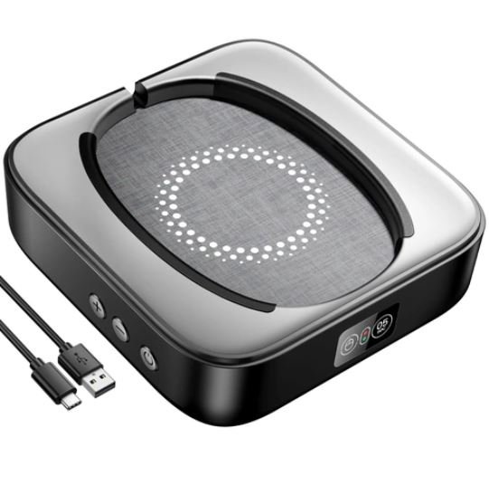
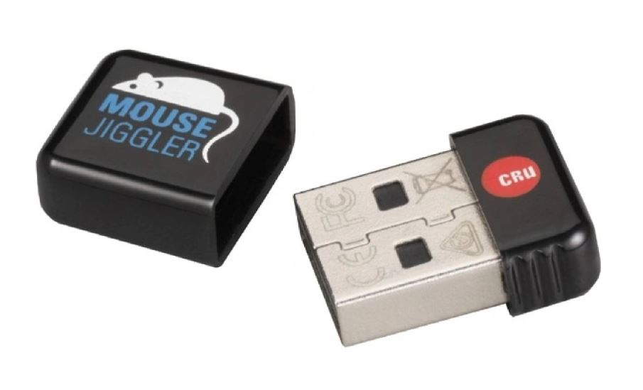
CAD návrh CAD design
Pro pohyb myši ve dvou osách jsou potřeba alespoň dva stupně volnosti. Zpočátku jsem zvažoval konstrukci klasického 2D plotteru. Ten by sice dokázal věrně napodobit lidský pohyb (včetně ostrých změn směru), ale výsledné zařízení by bylo příliš rozměrné, nepraktické, neestetické a vyžadovalo by složité uchycení myši. For moving the mouse in two axes, at least two degrees of freedom are required. Initially, I considered the construction of a classic 2D plotter. Although it would faithfully imitate human movement (including sharp changes of direction), the resulting device would be too large, impractical, unesthetic, and would require a complex mouse mounting.
Rozhodl jsem se proto pro kompaktnější řešení: myš je volně položena na otočné platformě, pod kterou se přímo pod senzorem pohybuje pás. Tím dostaneme potřebné dva stupně volnosti, zařízení je vizuálně jednoduché a myš na něj stačí jen položit. Nevýhodou tohoto řešení je neschopnost simulovat ostré změny směru (s výjimkou otočení o 180°). Při větších úhlech se musí platforma s myší nejdřív pomalu natočit, aby myš nespadla. Vzhledem k absenci uchycení není zařízení vhodné pro myši s kabelem, což mi ale nevadí, jelikož používám výhradně myši bezdrátové. I therefore decided on a more compact solution: the mouse is placed freely on a rotating platform, under which a belt moves directly below the sensor. This provides the necessary two degrees of freedom, the device is visually simple, and you just need to place the mouse on it. The disadvantage of this solution is the inability to simulate sharp changes of direction (with the exception of a 180° turn). For larger angles, the platform with the mouse must first turn slowly so the mouse doesn't fall off. Due to the lack of mounting, the device is not suitable for wired mice, which doesn't bother me, as I exclusively use wireless mice.
Pro CAD návrh jsem použil program Fusion 360. For the CAD design, I used the Fusion 360 program.
Tělo Body
Tělo zařízení mělo být co nejmenší a vzhledné. Jelikož ponese motory a elektroniku, musí být zároveň robustní. The body of the device was intended to be as small and aesthetically pleasing as possible. Since it will hold the motors and electronics, it must also be robust.
Zvolil jsem tvar válce o výšce 82 mm, průměru 72,5 mm a tloušťce stěn 5 mm s bočním výběžkem pro uložení elektroniky. Do čistě válcového prostoru se mi bohužel veškerou elektroniku a motory vměstnat nepodařilo. I chose a cylindrical shape with a height of 82 mm, a diameter of 72.5 mm, and a wall thickness of 5 mm with a side extension for housing the electronics. Unfortunately, I was unable to fit all the electronics and motors into a purely cylindrical space.
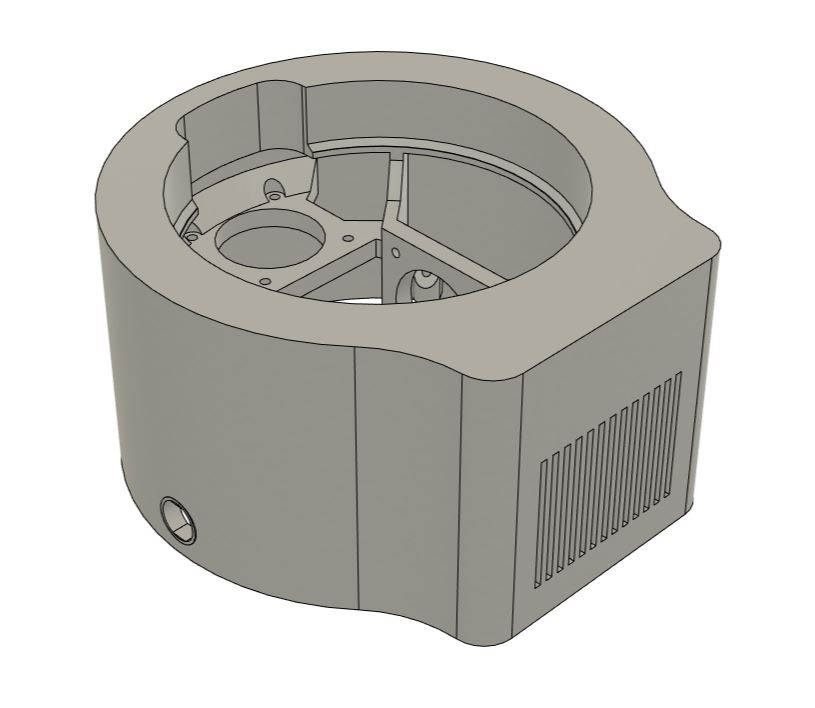
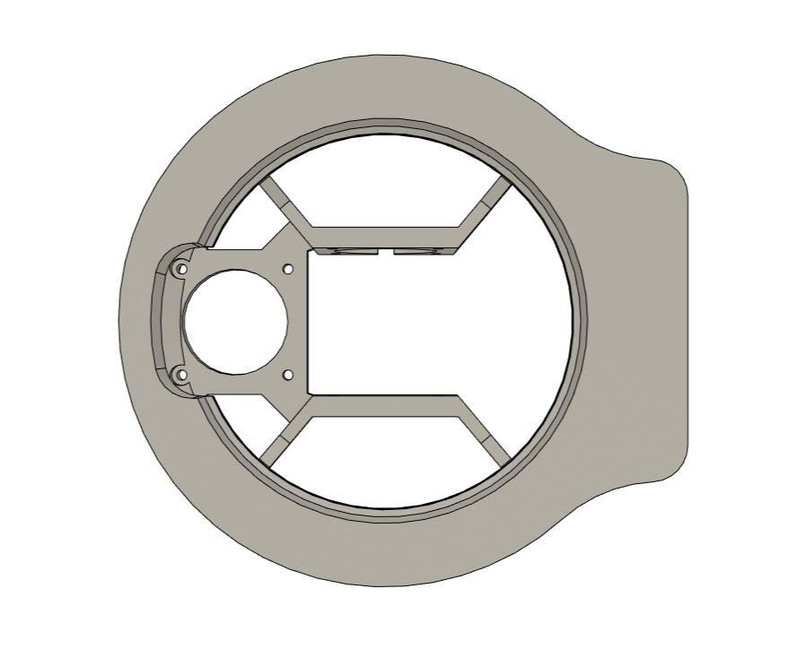
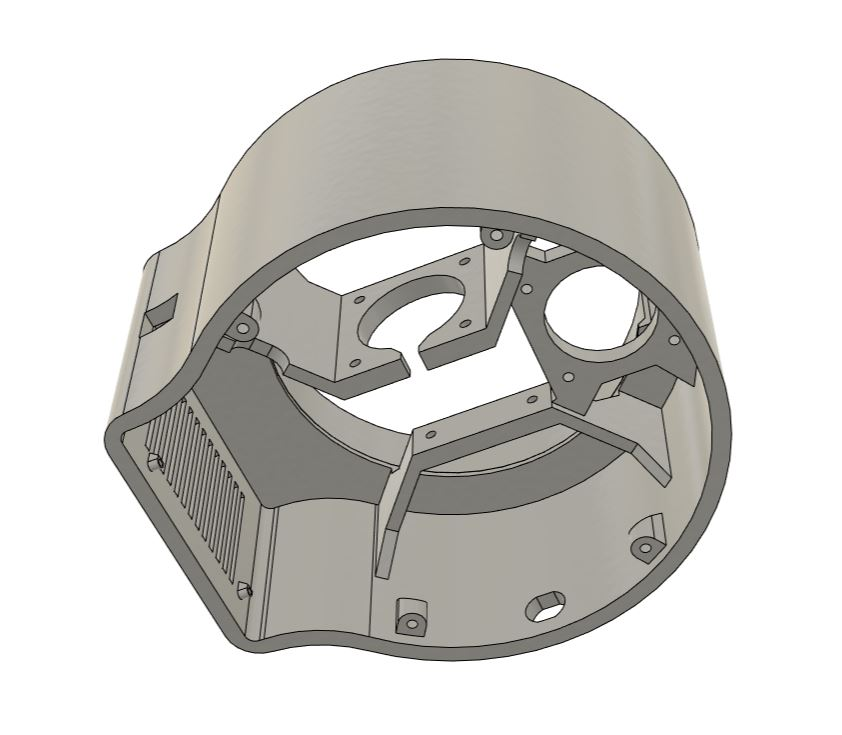
Protože Arduino UNO s CNC shieldem a zapojenými drivery má rozměry zhruba 54 × 69 × 43 mm, vytvořil jsem pro něj zmíněný boční výběžek. Arduino je v něm uchyceno pomocí dvou šroubů M2 × 4 mm. V konstrukci jsou pro ně připraveny dva otvory o průměru 2 mm, které jsou vypouklé o 3 mm, aby vznikl prostor pro piny vyčnívající ze zadní strany desky. Aby bylo možné Arduino programovat i po uzavření krabičky, vytvořil jsem z boku otvor pro USB port o rozměrech 11,3 × 12,7 mm. Because the Arduino UNO with a CNC shield and plugged-in drivers has dimensions of roughly 54 × 69 × 43 mm, I created the aforementioned side extension for it. The Arduino is mounted in it using two M2 × 4 mm screws. Two 2 mm diameter holes are prepared in the structure for them, which are raised by 3 mm to create space for the pins protruding from the back of the board. To make it possible to program the Arduino even after the box is closed, I created an opening for the USB port on the side with dimensions of 11.3 × 12.7 mm.
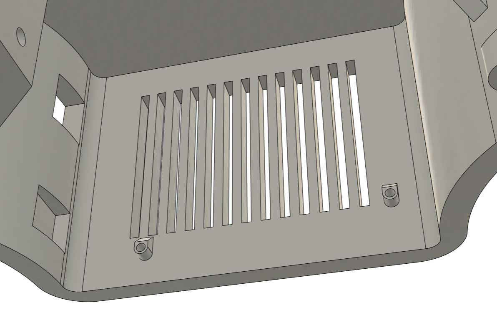
Motory Nema-17 jsou uchyceny pomocí čtyř šroubků M3 × 8 mm. Při návrhu jejich úchytů jsem vycházel z následujících nákresů: The Nema-17 motors are mounted using four M3 × 8 mm screws. When designing their mounts, I relied on the following drawings:


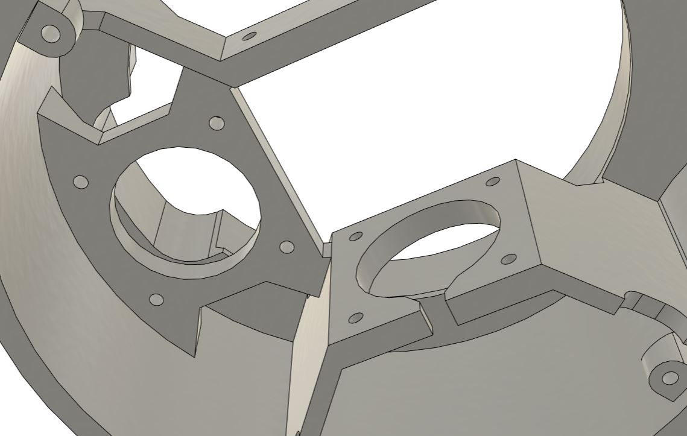
Do velkého otvoru navrchu těla zapadá ložisko 6014 (70 × 110 × 20 mm), které zajišťuje hladký pohyb platformy s myší. Proč tak velké ložisko? Bylo ve výprodeji. Původně jsem chtěl navrhnout vlastní ložisko pomocí malých kovových kuliček, ale slevu 90 % zkrátka nešlo odmítnout. A 6014 bearing (70 × 110 × 20 mm) fits into the large hole on top of the body, ensuring smooth movement of the platform with the mouse. Why such a large bearing? It was on sale. Originally, I wanted to design my own bearing using small metal balls, but a 90% discount was simply impossible to refuse.
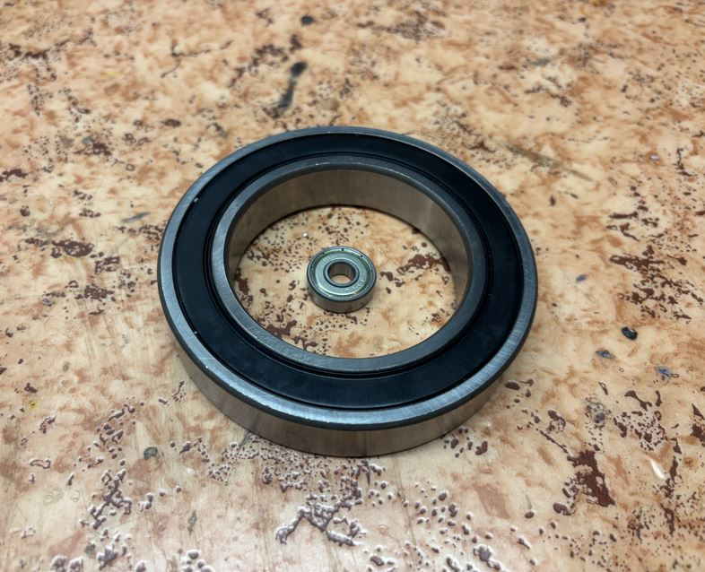
Na boku přístroje jsem vymodeloval malý kruhový otvor s průměrem 13 mm (se seříznutou horní a dolní úsečí o výšce 0,6 mm) pro napájecí konektor. On the side of the device, I modeled a small circular hole with a 13 mm diameter (with a cut-off top and bottom segment of 0.6 mm height) for the power connector.
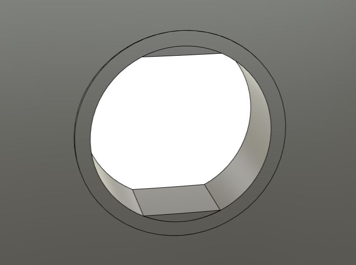
Spodní kryt je k tělu přišroubován čtyřmi šroubky M3 × 8 mm. Ke krytu je následně pomocí dvou šroubků M2 × 4 mm připevněn měnič napětí (i pro ně jsou připraveny vypouklé otvory jako u Arduina). The bottom cover is screwed to the body with four M3 × 8 mm screws. A voltage converter is subsequently attached to the cover using two M2 × 4 mm screws (raised holes are also prepared for them, just like for the Arduino).
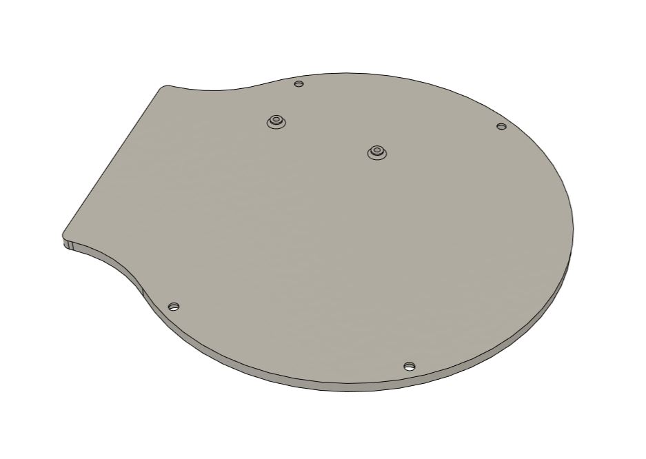
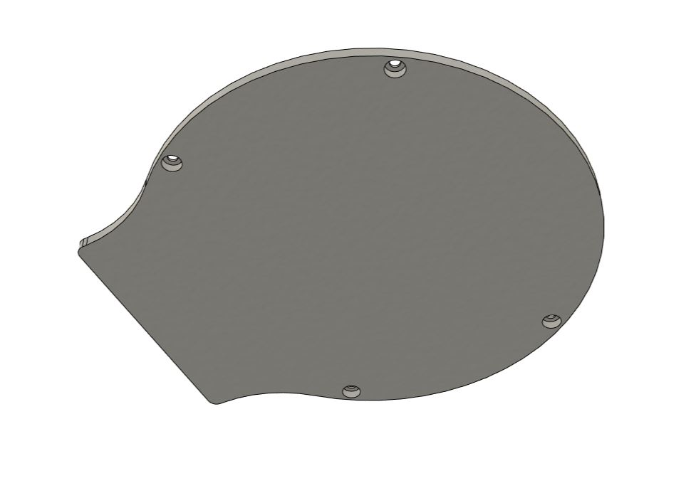
Otáčecí platforma Rotating platform
Platforma, na které myš leží, je zasazena do vnitřního kruhu velkého ložiska. Uprostřed má otvor o průměru 58 mm pro pohyblivý pás. Výšku platformy jsem ladil celkem natřikrát, aby se pás pohyboval co nejtěsněji pod optickým senzorem myši. The platform on which the mouse rests is set into the inner ring of the large bearing. In the middle, it has a 58 mm diameter hole for the moving belt. I fine-tuned the height of the platform a total of three times so that the belt moves as closely as possible under the mouse's optical sensor.
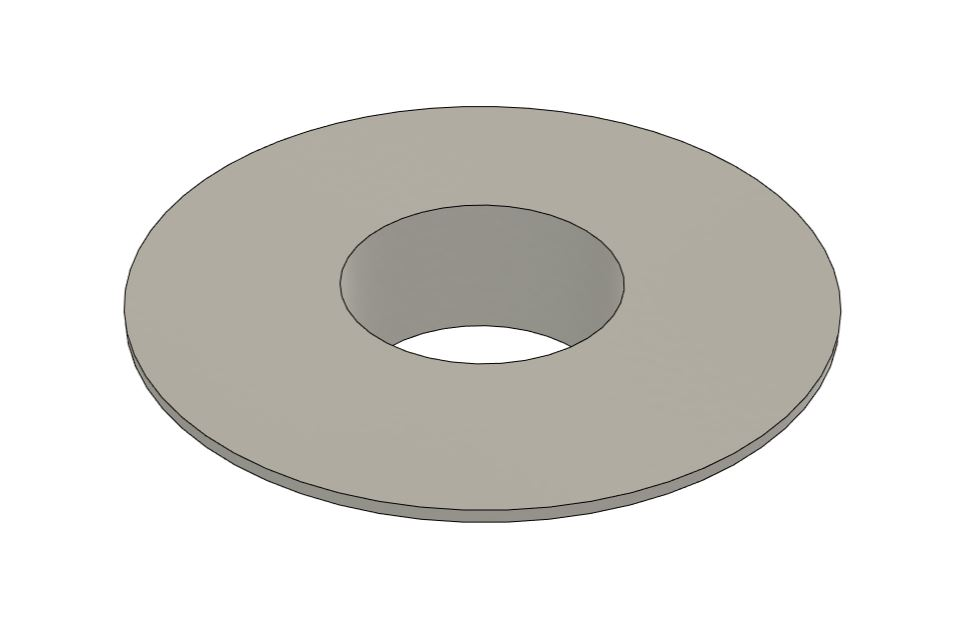
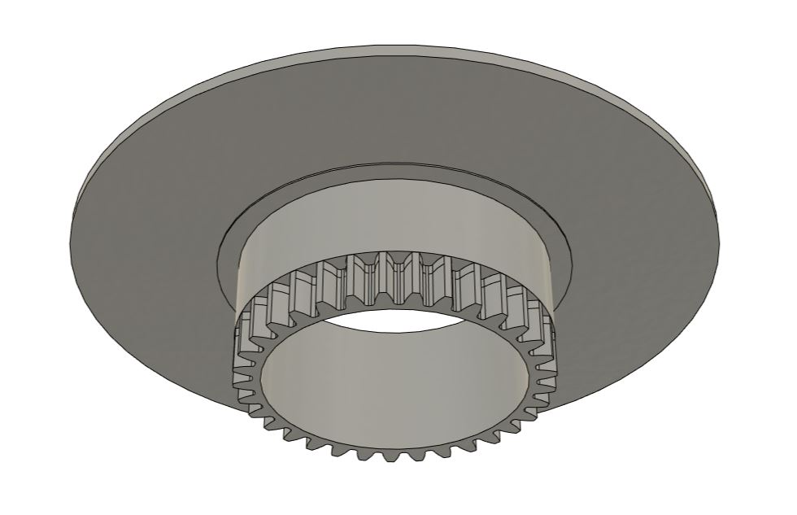
Otáčení zajišťuje ozubené kolo, které je s platformou pevně spojeno. Model ozubeného kola jsem vygeneroval pomocí doplňku Spur Gear (UTILITIES -> ADD-INS -> Scripts and Add-ins -> Spur Gear). Po aktivaci se tento nástroj přidá do menu SOLID -> CREATE. Parametry kola jsem zvolil následovně: Rotation is provided by a gear that is firmly connected to the platform. I generated the gear model using the Spur Gear add-in (UTILITIES -> ADD-INS -> Scripts and Add-ins -> Spur Gear). After activation, this tool is added to the SOLID -> CREATE menu. I chose the gear parameters as follows:
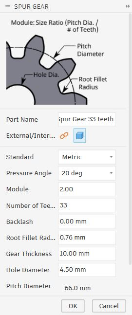
K pohonu platformy slouží menší ozubené kolo se stejnými parametry zubů (počet zubů 11), které je nasazeno na hřídel krokového motoru (průměr 5 mm). Průměr vnitřního otvoru ozubeného kola je 5,2 mm a k hřídeli je zafixován šroubkem M3 × 8 mm. Ten částečně projde tělem kolečka a opře se o hřídel, čímž zabrání prokluzování. A smaller gear with the same tooth parameters (11 teeth) is used to drive the platform, which is mounted on the stepper motor shaft (5 mm diameter). The diameter of the inner hole of the gear is 5.2 mm and it is fixed to the shaft with an M3 × 8 mm screw. This partially passes through the body of the gear and rests against the shaft, preventing slipping.
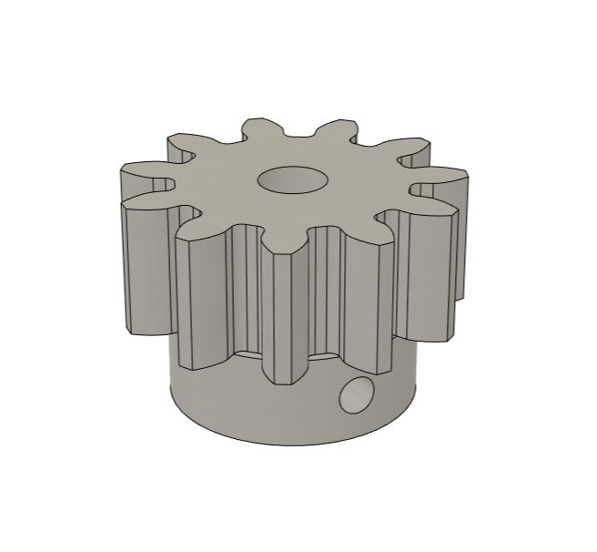
Aby myš na platformě při prudších pohybech neklouzala a nespadla, polepím horní plochu 0,4 mm silnou protiskluzovou podložkou z flexibilního filamentu (TPU). So that the mouse on the platform doesn't slide and fall during sharper movements, I will glue a 0.4 mm thick anti-slip pad made of flexible filament (TPU) to the upper surface.
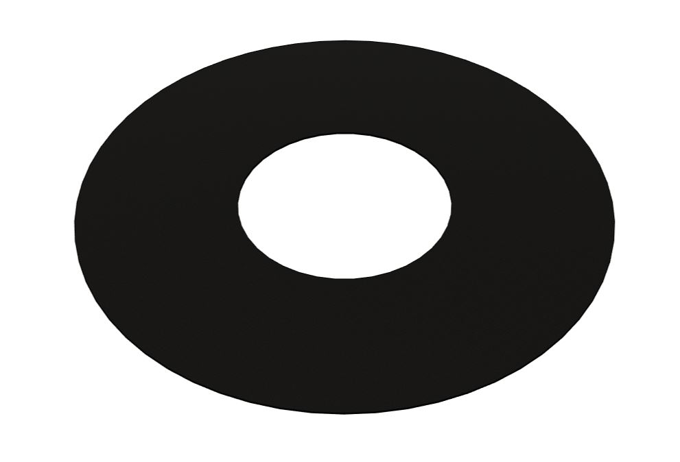
Konstrukce pro vedení pásu Belt guide structure
Pás pohybující se pod senzorem myši je napnutý mezi řemenicí na hřídeli motoru a vodicí konstrukcí, která jej udržuje ve správné výšce. Tato konstrukce se skládá ze dvou bočnic přišroubovaných k tělu stroje pomocí čtyř šroubů M3 × 12 mm. Bočnice mezi sebou svírají dva svorníky prošroubované dvěma šrouby M3 × 40 mm. Hladký chod pásu je zajištěn šesti ložisky, která jsou na svornících nasazena a proložena distančními podložkami (spacery). Spacery umístěné mezi ložisky mají průměr 11 mm a tloušťku 4 mm, čímž vytvářejí prostor pro zuby řemenu. Spacery na krajích (mezi bočnicemi a ložisky) mají tloušťku 2 mm. The belt moving under the mouse sensor is stretched between the pulley on the motor shaft and the guide structure, which keeps it at the correct height. This structure consists of two side plates screwed to the machine body using four M3 × 12 mm screws. The side plates clamp two bolts between them, screwed through with two M3 × 40 mm screws. Smooth running of the belt is ensured by six bearings mounted on the bolts and interspersed with distance washers (spacers). The spacers located between the bearings have a diameter of 11 mm and a thickness of 4 mm, creating space for the belt teeth. The spacers on the edges (between the side plates and bearings) have a thickness of 2 mm.
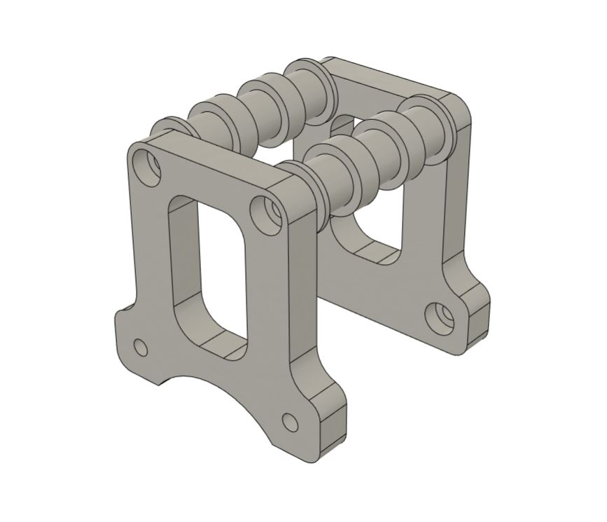
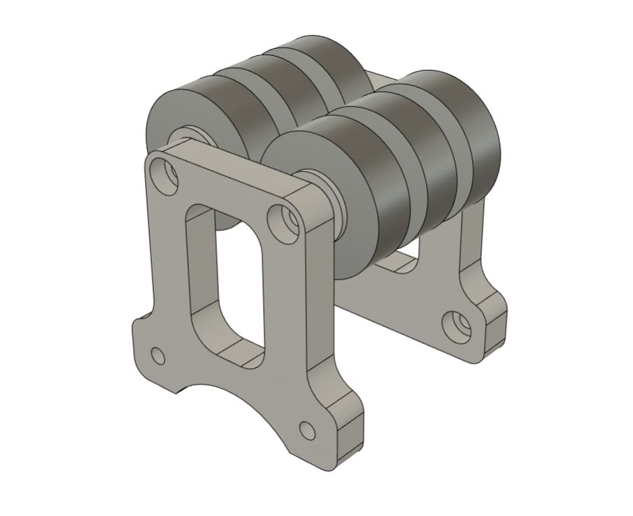
Řemen a řemenice Belt and pulley
Potřebnou délku řemenu jsem odvodil z náčrtu, do kterého jsem promítl obrysy řemenice a ložisek a následně je spojil tečnami. Teoretický vnitřní obvod vyšel na zhruba 184 mm. Aby však řemen nebyl příliš volný a zároveň šel rozumně lehce nasadit, navrhl jsem jej s vnitřním obvodem 177,2 mm a šířkou 0,8 mm. I derived the necessary belt length from a sketch into which I projected the outlines of the pulley and bearings, and then connected them with tangents. The theoretical inner circumference turned out to be roughly 184 mm. However, so that the belt wasn't too loose and could be put on reasonably easily at the same time, I designed it with an inner circumference of 177.2 mm and a width of 0.8 mm.
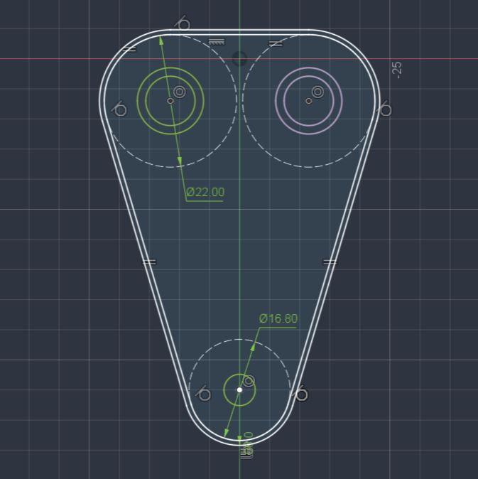
První verze řemenu spoléhající pouze na tření prokluzovala. Proto jsem na něj přidal dvě řady zubů (celkem 92 zubů na řadu o šířce 4 mm). Řady jsou od sebe vzdálené přesně na šířku jednoho ložiska 608Z (8 × 22 × 7 mm) a jsou vůči sobě natočeny o polovinu zubu pro plynulejší chod. Zuby jsou ze spodní strany zkoseny pod úhlem zhruba 52°, aby se daly vytisknout na 3D tiskárně bez nutnosti podpor. Díky tomuto vylepšení řemen už neprokluzuje, daní za to je ale mírně hlučnější chod. The first version of the belt, relying only on friction, was slipping. Therefore, I added two rows of teeth to it (a total of 92 teeth per row with a width of 4 mm). The rows are spaced exactly the width of one 608Z bearing (8 × 22 × 7 mm) apart and are rotated relative to each other by half a tooth for smoother running. The teeth are chamfered from the bottom at an angle of roughly 52° so that they can be printed on a 3D printer without the need for supports. Thanks to this improvement, the belt no longer slips, but the price for this is slightly noisier operation.
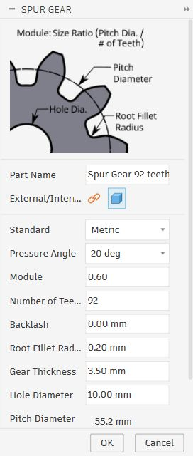
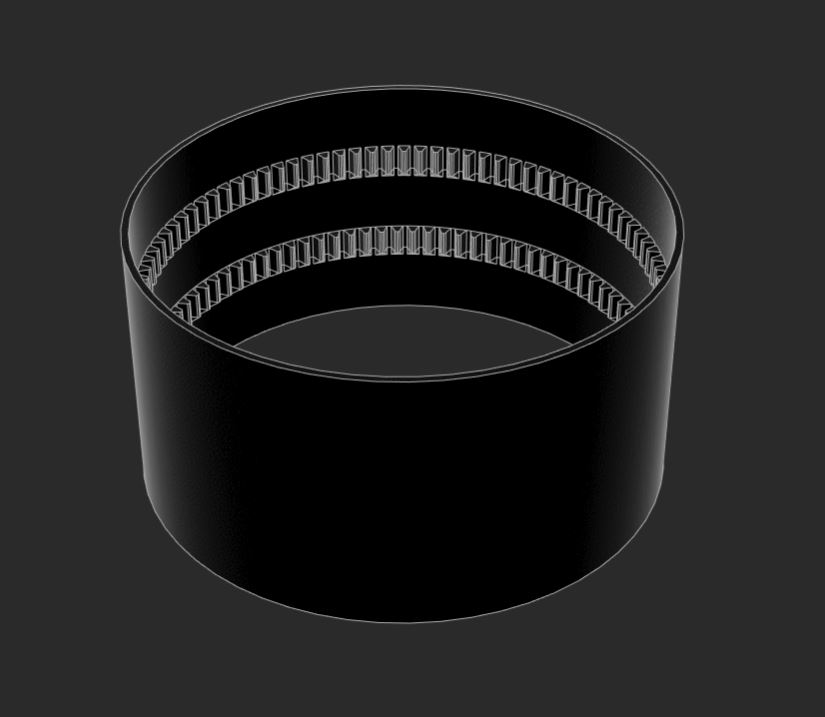
Řemenice se nasazuje na hřídel motoru otvorem o průměru 5,2 mm a je zajištěna fixačním šroubkem stejně jako ozubené kolo u platformy. Ozubení na řemenici odpovídá profilu na řemenu, přičemž každá řada obsahuje 26 zubů. The pulley mounts to the motor shaft via a 5.2 mm diameter hole and is secured by a set screw just like the platform gear. The teeth on the pulley match the profile on the belt, with each row containing 26 teeth.
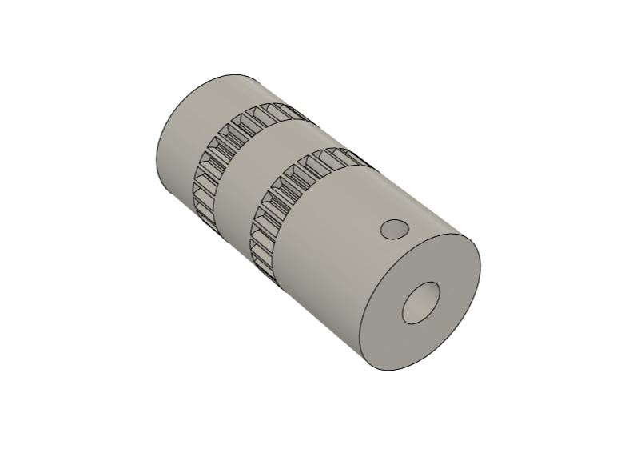
Hotový CAD návrh Finished CAD design
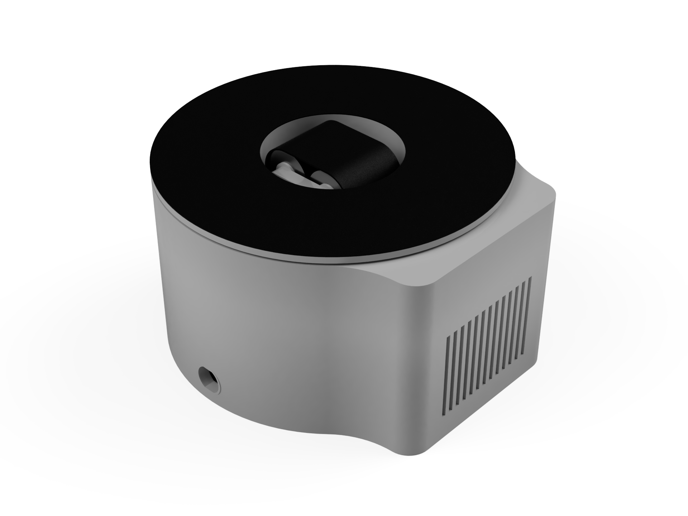
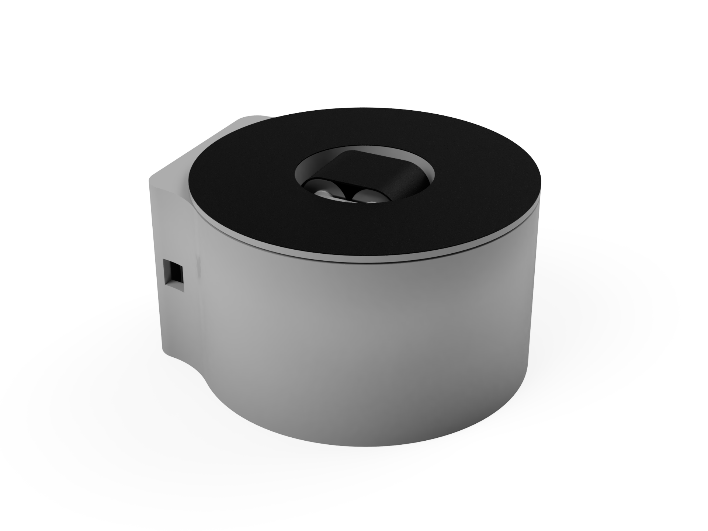
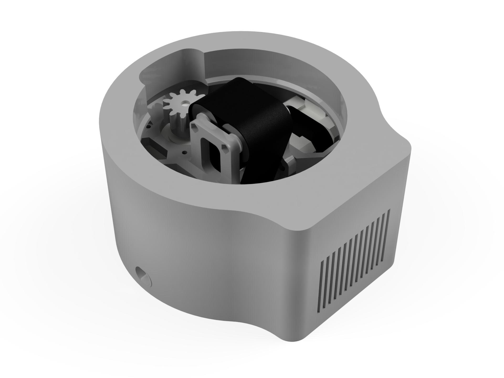
Elektronika Electronics
Seznam součástek List of components
- Arduino UNO R3 (klon)Arduino UNO R3 (clone)
- Arduino CNC shield V3Arduino CNC shield V3
- Step-down měnič s LM2596Step-down converter with LM2596
- 2× driver TMC2209 V2.02× TMC2209 V2.0 driver
- Krokový motor NEMA 17 (17HS3401, 0,28 Nm)Stepper motor NEMA 17 (17HS3401, 0.28 Nm)
- Krokový motor NEMA 17 (17HS4023, 0,14 Nm)Stepper motor NEMA 17 (17HS4023, 0.14 Nm)
- Síťový napájecí adaptér (12 V, 3 A, konektor 5,5 / 2,1 mm)AC power adapter (12 V, 3 A, 5.5 / 2.1 mm connector)
- Napájecí konektor panelový DC-022 (5,5 / 2,1 mm)Panel mount DC power jack DC-022 (5.5 / 2.1 mm)
- Propojovací kabely DuPont (M-F)DuPont jumper wires (M-F)
Schéma a návrh elektroniky Schematic and electronics design

Zařízení je napájeno ze sítě pomocí 12V adaptéru přes panelový DC konektor. Z něj je V+ a GND vedeno do svorkovnice CNC shieldu, který zajišťuje napájení krokových motorů. Paralelně je ke konektoru připojen step-down měnič snižující napětí na 5,1 V. Ten slouží k napájení logiky CNC shieldu a samotného Arduina. The device is powered from the mains via a 12V adapter through a panel-mount DC connector. From it, V+ and GND are routed to the terminal block of the CNC shield, which provides power to the stepper motors. A step-down converter is connected in parallel to the connector, dropping the voltage to 5.1 V. This is used to power the CNC shield logic and the Arduino itself.
Pro přesné řízení pozice bez nutnosti zpětné vazby a pro možnost nekonečného otáčení jsem zvolil krokové motory NEMA 17 (s krouticím momentem 0,14 Nm a 0,28 Nm). Výkonově by sice postačovaly dva slabší motory (0,14 Nm), ale využil jsem ty, které jsem měl aktuálně k dispozici. For precise position control without the need for feedback and for the possibility of endless rotation, I chose NEMA 17 stepper motors (with torques of 0.14 Nm and 0.28 Nm). Although two weaker motors (0.14 Nm) would have sufficed in terms of power, I utilized the ones I currently had on hand.
K řízení obou motorů slouží drivery TMC2209. Ty udržují hladký sinusový průběh proudu, což zajišťuje velmi tichý chod. Drivery jsou nastaveny na mikrokrokování (1/8), ale interně dokážou kroky plynule interpolovat na 1/256. Výsledkem je plynulý pohyb bez vysokých nároků na výkon Arduina. Původně jsem testoval i drivery DRV8825, ale motory s nimi byly příliš hlučné. TMC2209 drivers are used to control both motors. They maintain a smooth sinusoidal current profile, ensuring very quiet operation. The drivers are set to microstepping (1/8), but internally they can smoothly interpolate steps up to 1/256. The result is smooth movement without high demands on the Arduino's performance. Originally, I also tested DRV8825 drivers, but the motors were too noisy with them.
Aby motory nespotřebávaly zbytečně velký proud a nepřehřívaly se, omezil jsem na driverech pomocí trimru špičkový proud pro oba motory na 0,4 A (maximální špičkový proud motorů je přitom 0,7 A a 1,2 A). Výpočet se řídí vzorcem: So that the motors don't consume unnecessarily large current and do not overheat, I limited the peak current for both motors on the drivers using a trimmer to 0.4 A (the maximum peak current of the motors is 0.7 A and 1.2 A). The calculation is governed by the formula:
$$I_{peak} = V_{ref}$$
- $I_{peak}$ : Maximální proud na fázi. $I_{peak}$ : Maximum phase current.
- $V_{ref}$ : Napětí na trimru. $V_{ref}$ : Voltage on the trimmer.
Trimr jsem pomocí malého šroubováku nastavil tak, abych na něm vůči GND pinu Arduina naměřil referenční napětí 0,4 V. Při tomto nastaveném proudu motory nevynechávají kroky a zároveň mají dostatek síly pro pohyb myši. I adjusted the trimmer with a small screwdriver so that I measured a reference voltage of 0.4 V on it relative to the Arduino's GND pin. At this set current, the motors do not skip steps while simultaneously having enough power to move the mouse.
3D tisk 3D printing
Díly z PLA PLA parts
Hotové modely těla stroje, platformy, ozubeného kolečka, řemenice, spacerů, svorníků a bočnic konstrukce pro vedení pásu jsem exportoval do formátu 3MF a připravil k tisku ve sliceru Bambu Studio. Jako materiál jsem zvolil PLA. Tisk probíhal na 3D tiskárně Bambu Lab A1 Mini s tryskou o průměru 0,4 mm a s následujícím nastavením: I exported the finished models of the machine body, platform, gear, pulley, spacers, bolts, and side plates of the belt guide structure to the 3MF format and prepared them for printing in the Bambu Studio slicer. I chose PLA as the material. Printing took place on a Bambu Lab A1 Mini 3D printer with a 0.4 mm diameter nozzle and the following settings:
- Profil: 0.20 mm Standard @BBL A1MProfile: 0.20 mm Standard @BBL A1M
- Nozzle temperature (teplota trysky): 210 °CNozzle temperature: 210 °C
- Bed temperature (teplota podložky): 65 °CBed temperature: 65 °C
- Wall loops (perimetry): 2Wall loops: 2
- Sparse infill density (hustota výplně): 15 %Sparse infill density: 15%
- Sparse infill pattern (vzor výplně): GyroidSparse infill pattern: Gyroid
- Outer wall speed (rychlost tisku vnější stěny): 60 mm/sOuter wall speed: 60 mm/s
Zbylá nastavení jsem ponechal na výchozích hodnotách vybraného tiskového profilu. I left the remaining settings at the default values for the selected print profile.
Jelikož některé díly obsahují výrazné převisy (zejména tělo stroje), bylo nezbytné použít podpěry. Ty jsem nastavil následovně: Since some parts contain significant overhangs (especially the machine body), it was necessary to use supports. I set these up as follows:
- Type (typ): Tree (auto)Type: Tree (auto)
- Top Z distance (mezera v ose Z): 0,20 mmTop Z distance: 0.20 mm
Ostatní parametry podpěr zůstaly ve výchozím stavu. The other support parameters remained in their default state.
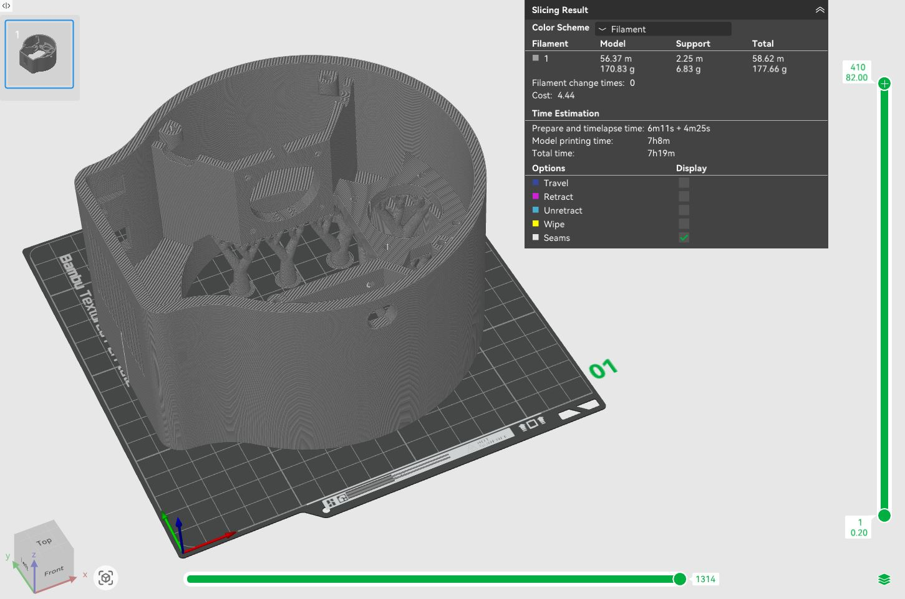
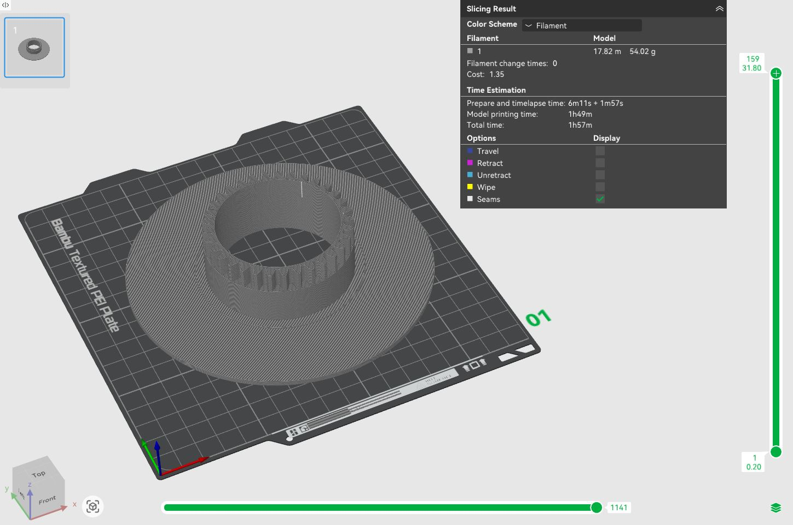
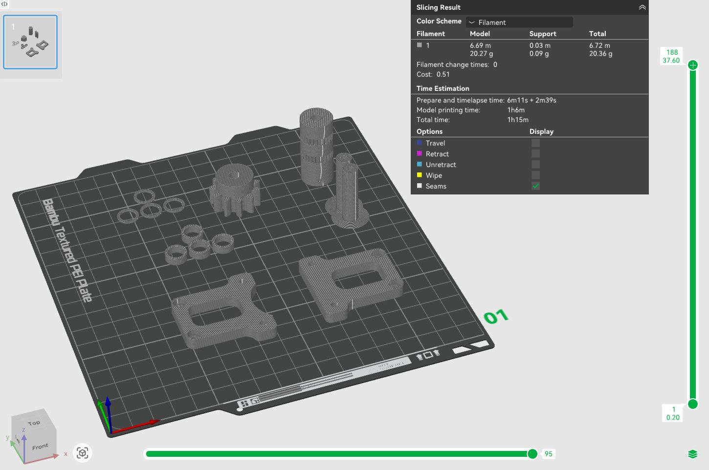
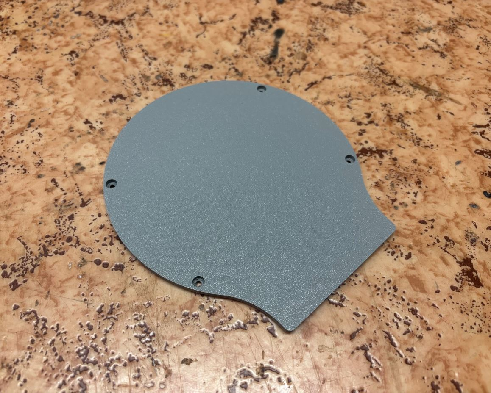
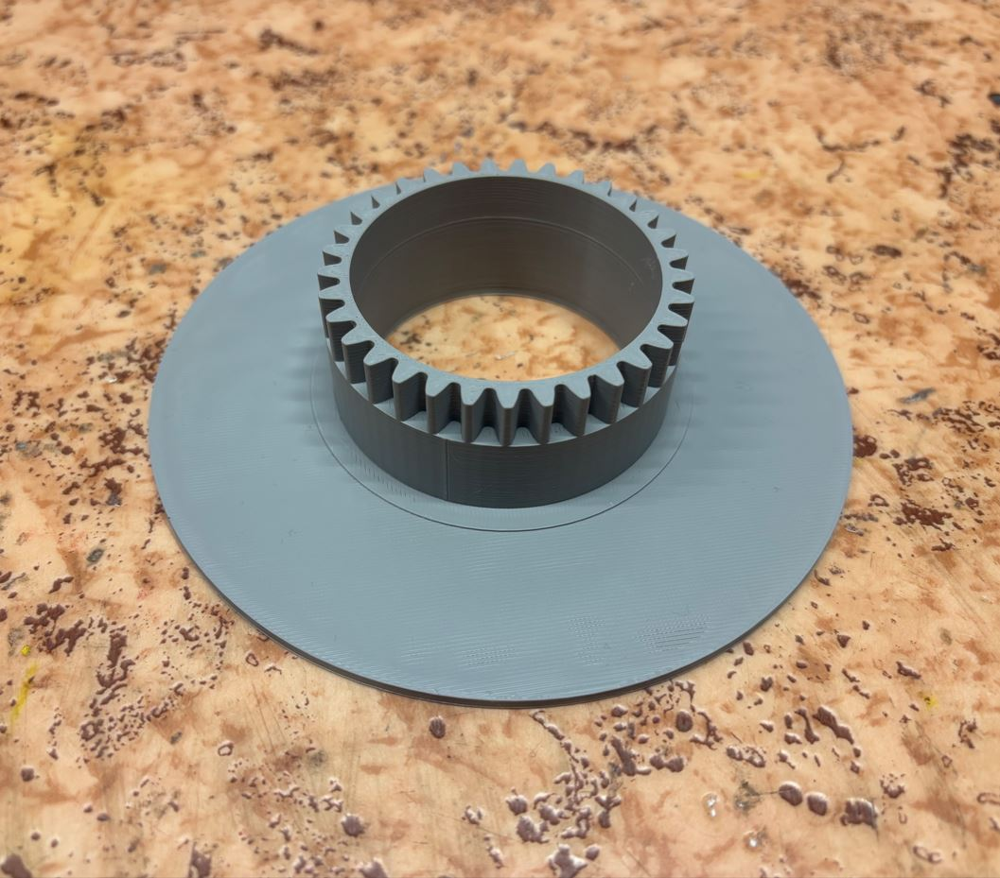
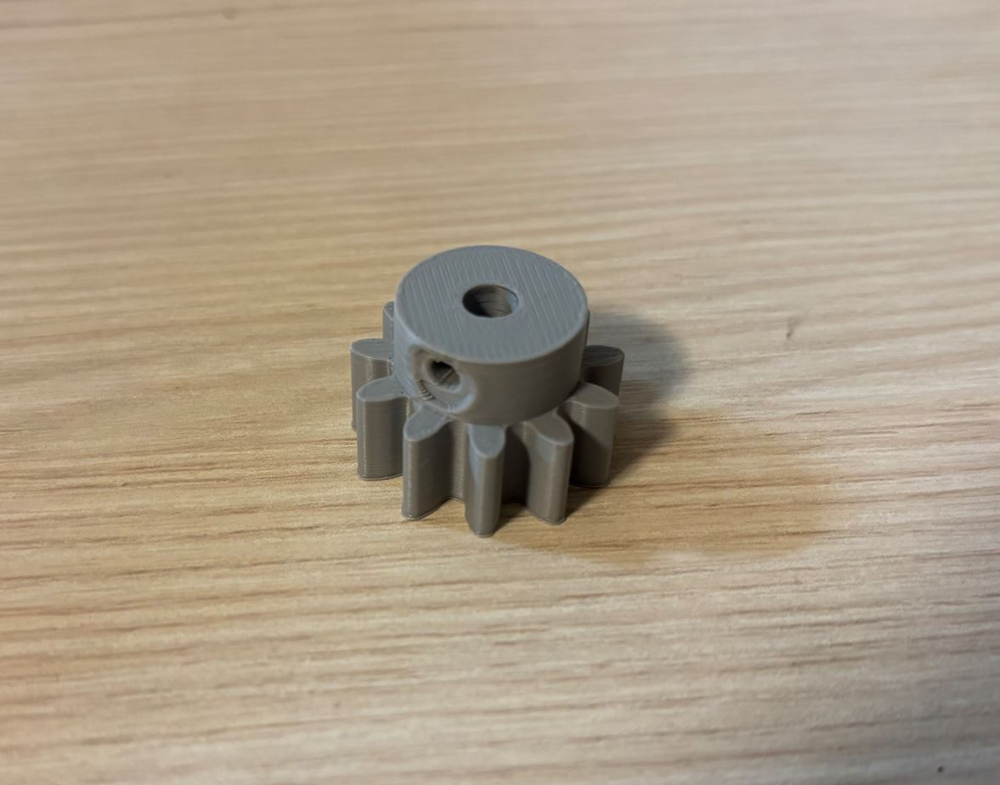
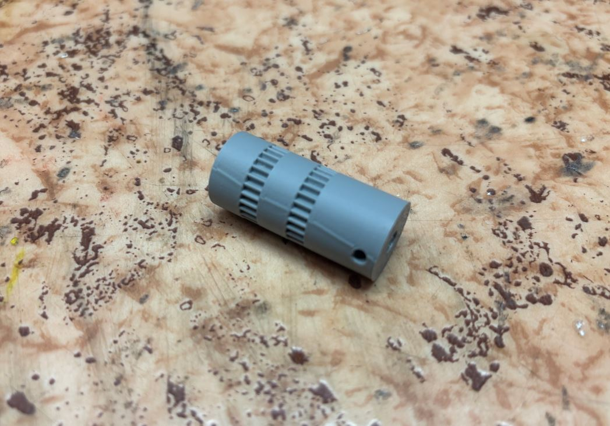
Ukázka hrubšího povrchu po odstranění podpěr: Example of the rougher surface after support removal:
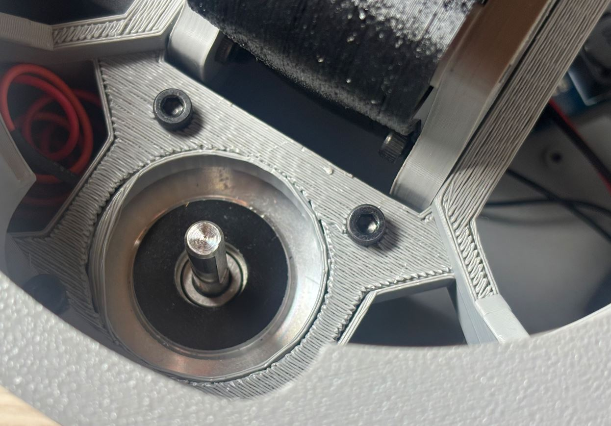
Díly z TPU TPU parts
Protiskluzovou podložku a řemen jsem tiskl z flexibilního materiálu TPU s tvrdostí 95A. Tato tvrdost představuje kompromis mezi dostatečnou pružností a snadným tiskem. Aby optický senzor myši lépe zachytil pohyb pásu, využil jsem funkci Fuzzy Skin, která na povrchu vytvoří drobnou, umělou texturu. Tisk probíhal s tímto nastavením: I printed the anti-slip pad and the belt from a flexible TPU material with a hardness of 95A. This hardness represents a compromise between sufficient flexibility and ease of printing. For the mouse's optical sensor to better capture the belt's movement, I used the Fuzzy Skin function, which creates a fine, artificial texture on the surface. Printing proceeded with these settings:
- Profil: 0.20 mm Standard @BBL A1MProfile: 0.20 mm Standard @BBL A1M
- Nozzle temperature (teplota trysky): 230 °CNozzle temperature: 230 °C
- Bed temperature (teplota podložky): 30 °CBed temperature: 30 °C
- Wall loops (perimetry): 2Wall loops: 2
- Sparse infill density (hustota výplně): 15 %Sparse infill density: 15%
- Sparse infill pattern (vzor výplně): GyroidSparse infill pattern: Gyroid
- Fuzzy skin point distance: 0,08 mmFuzzy skin point distance: 0.08 mm
- Fuzzy skin thickness: 0,08 mmFuzzy skin thickness: 0.08 mm
- Rychlosti: Veškeré rychlosti tisku jsem sjednotil na 40 mm/s.Speeds: I unified all printing speeds to 40 mm/s.
Zbylá nastavení jsem opět nechal na výchozích hodnotách. Tisk těchto dílů proběhl bez použití podpěr. I once again left the remaining settings at default values. Printing these parts was done without using supports.
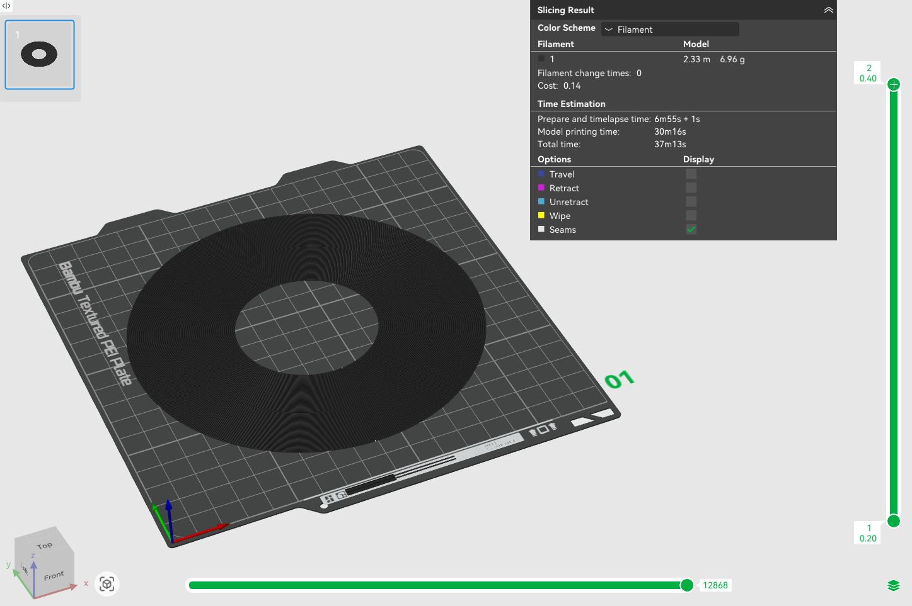
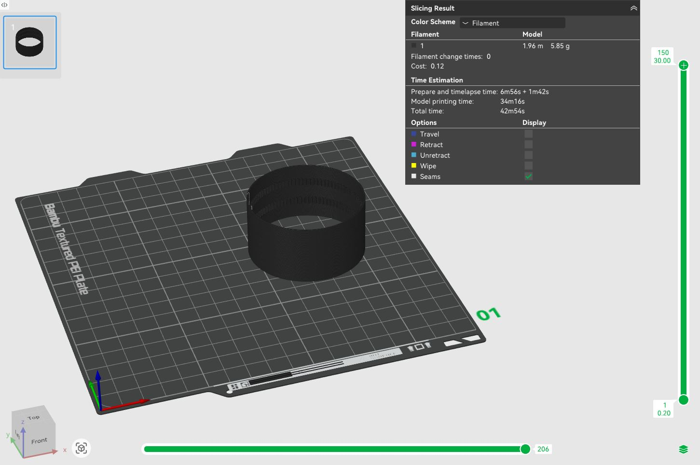
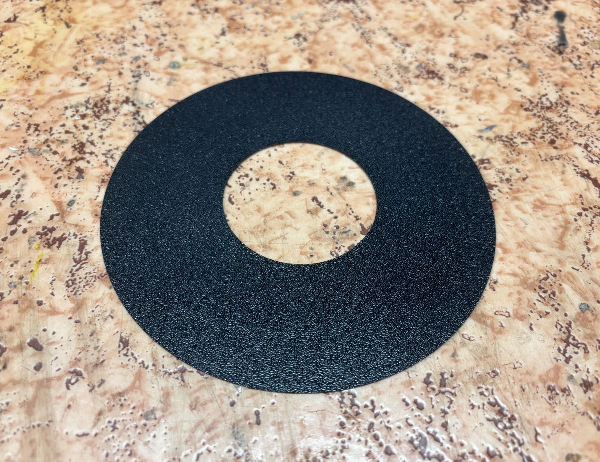
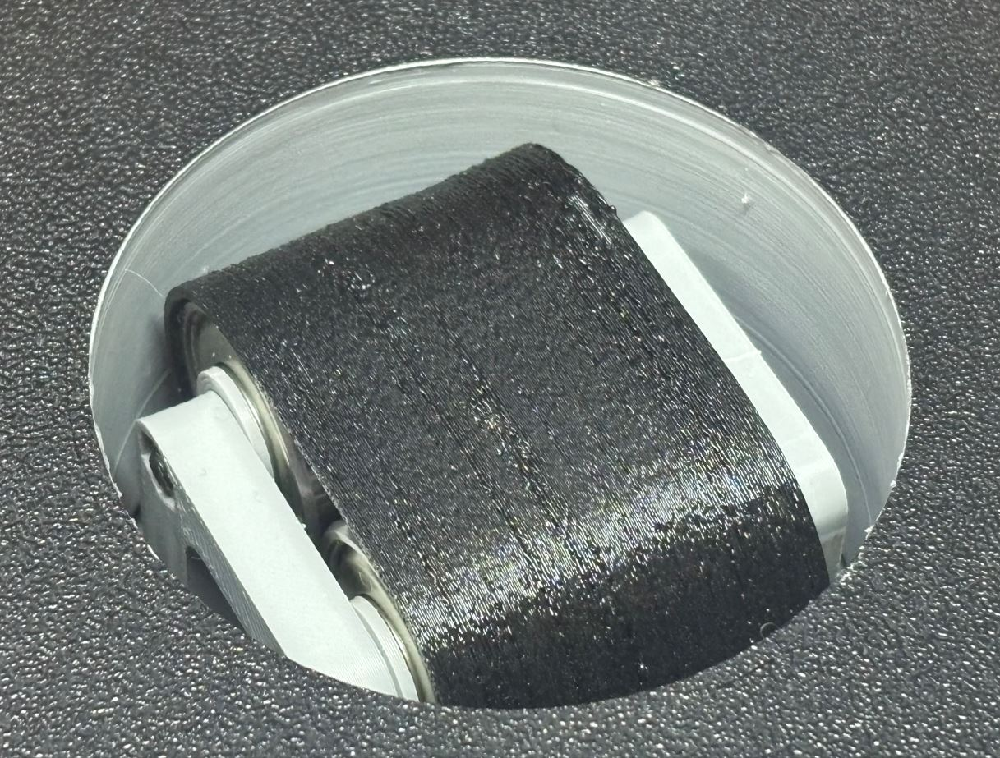
Sestavení Assembly
Seznam součástek a materiálů List of components and materials
- Arduino UNO R3 (klon)Arduino UNO R3 (clone)
- Arduino CNC shield V3Arduino CNC shield V3
- Step-down měnič s LM2596Step-down converter with LM2596
- 2× driver TMC2209 V2.02× TMC2209 V2.0 driver
- Krokový motor NEMA 17 (17HS3401, 0,28 Nm)Stepper motor NEMA 17 (17HS3401, 0.28 Nm)
- Krokový motor NEMA 17 (17HS4023, 0,14 Nm)Stepper motor NEMA 17 (17HS4023, 0.14 Nm)
- Síťový napájecí adaptér (12 V, 3 A, konektor 5,5 / 2,1 mm)AC power adapter (12 V, 3 A, 5.5 / 2.1 mm connector)
- Napájecí konektor panelový DC-022 (5,5 / 2,1 mm)Panel mount DC power jack DC-022 (5.5 / 2.1 mm)
- Propojovací kabely DuPont (M-F)DuPont jumper wires (M-F)
- 252 g filamentu Bambu Lab PLA Basic (cca 10,5 hodin tisku na Bambu Lab A1 mini)252 g of Bambu Lab PLA Basic filament (approx. 10.5 hours of printing on Bambu Lab A1 mini)
- 13 g filamentu Professional Lab TPU 95A (cca 1,3 hodiny tisku na Bambu Lab A1 mini)13 g of TPU Professional Lab filament (approx. 1.3 hours of printing on Bambu Lab A1 mini)
- Kuličkové ložisko 6014 (70 × 110 × 20 mm)Ball bearing 6014 (70 × 110 × 20 mm)
- 6× kuličkové ložisko 608Z (8 × 22 × 7 mm)6× ball bearing 608Z (8 × 22 × 7 mm)
- Sada šroubků a matic (M2-M4)Set of screws and nuts (M2-M4)
- Vteřinové lepidloSuperglue
Postup sestavení Assembly process
Samotné sestavení bylo poměrně zdlouhavé, protože utahování šroubů probíhalo ve velmi stísněných prostorech, kde nebylo možné s imbusem udělat celou otočku. Osvědčilo se mi proto všechny závity ještě před samotnou montáží několikrát prošroubovat nanečisto. Otvory se tím mírně uvolnily, takže při finálním sestavování šrouby stačilo zašroubovat rukou a imbus použít až na dotažení. The assembly itself was rather tedious because tightening the screws took place in very cramped spaces, where it was not possible to make a full turn with the hex key. It therefore proved useful to pre-thread all the holes multiple times before the actual assembly. This loosened the holes slightly, so during final assembly, the screws just needed to be screwed in by hand and the hex key used only for tightening.
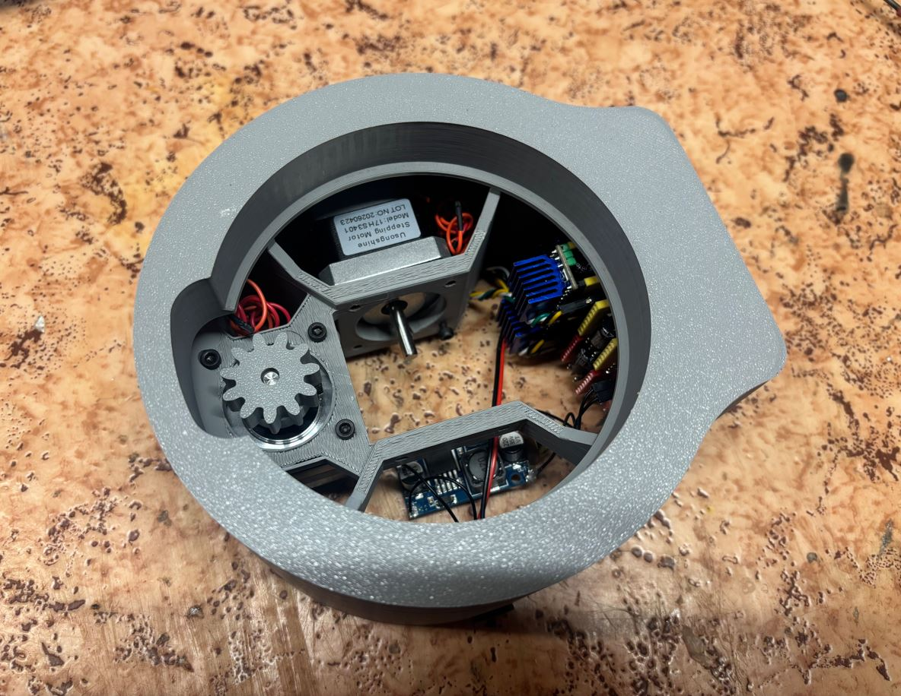
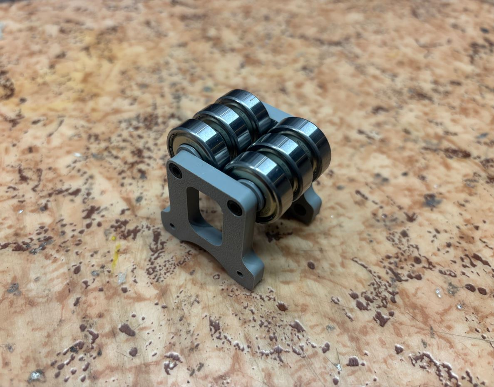
Montáž pásu vyžadovala specifický postup: nejprve jsem sestavil celou konstrukci pro jeho vedení, volně jsem na ni nasadil pás a poté jsem ji přišrouboval k tělu zařízení. Následně jsem pás přetáhl přes řemenici krokového motoru. Ten byl v tu chvíli už vložený na svém místě, ale záměrně ještě nebyl přišroubovaný. Až finálním dotažením motoru k tělu stroje se řemen napnul. Installing the belt required a specific procedure: first, I assembled the entire guide structure, loosely fitted the belt onto it, and then screwed it to the device body. Subsequently, I pulled the belt over the stepper motor pulley. At that moment, it was already placed in its position but intentionally was not screwed down yet. Only with the final tightening of the motor to the machine body was the belt tensioned.
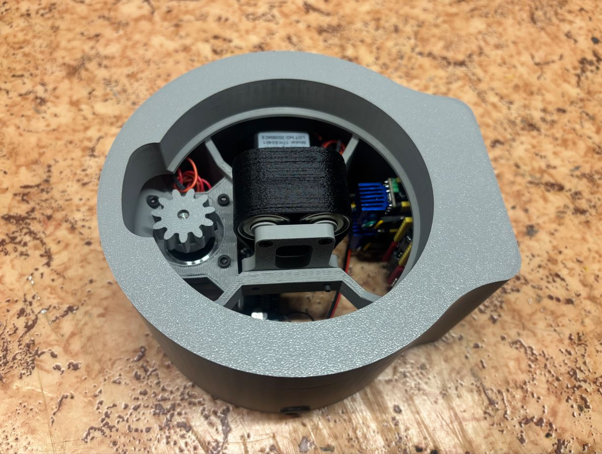
Dráty od motorů byly od výroby zbytečně dlouhé, proto jsem je do sebe zakroutil, abych je tím zkrátil a ušetřil uvnitř místo. Kabely jsem poté na několika místech zafixoval tavným lepidlem, aby se v těle stroje nemohly volně pohybovat a nehrozilo jejich zachycení do pohyblivých částí. The motor wires were unnecessarily long from the factory, so I twisted them together to shorten them and save space inside. I then secured the cables with hot melt adhesive in several places so they couldn't move freely inside the machine body, eliminating the risk of getting caught in moving parts.
Následovalo připevnění spodního krytu. Poté jsem horním otvorem pomocí dlouhého magnetického imbusu přišrouboval měnič napětí. Do velkého otvoru na vrchní straně stroje pak už jen stačilo zasadit hlavní ložisko a do něj vložit rotační platformu. This was followed by attaching the bottom cover. Then, I screwed on the voltage converter through the top opening using a long magnetic hex key. All that was left was to seat the main bearing into the large opening on the top side of the machine and insert the rotating platform into it.
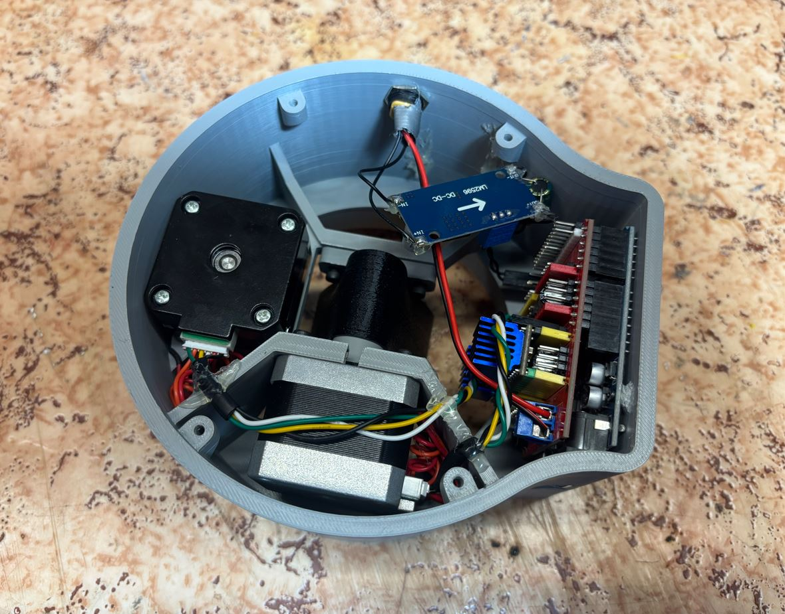
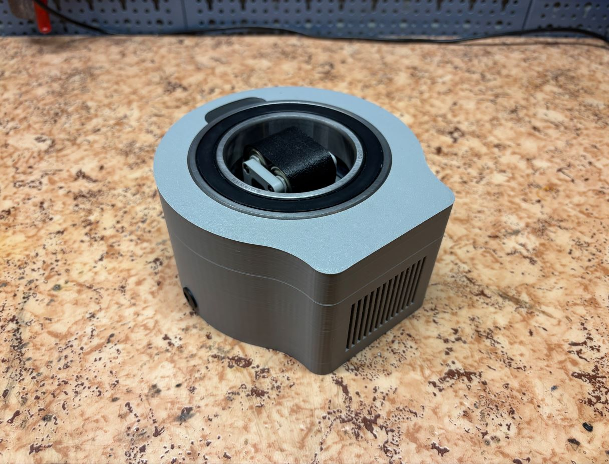
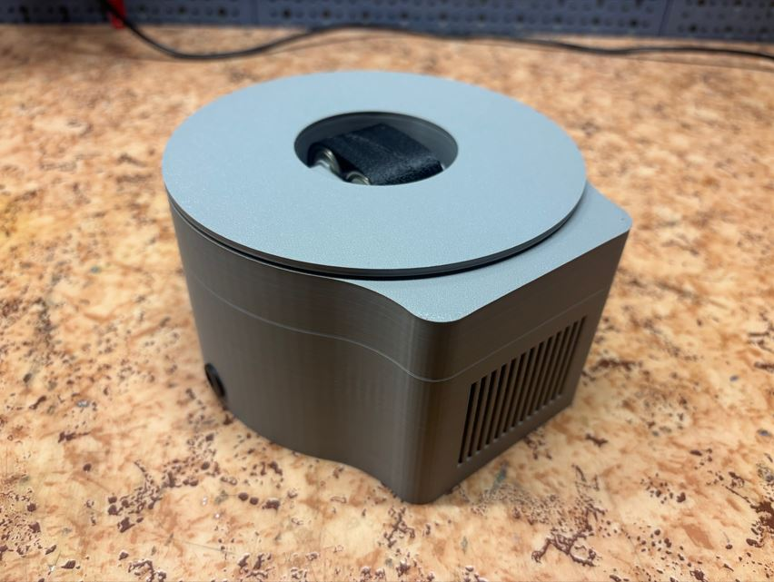
Na závěr jsem k rotační platformě vteřinovým lepidlem přilepil vytištěnou protiskluzovou podložku z TPU. Finally, I glued the printed TPU anti-slip pad to the rotating platform using superglue.
Sestavený stroj Assembled machine
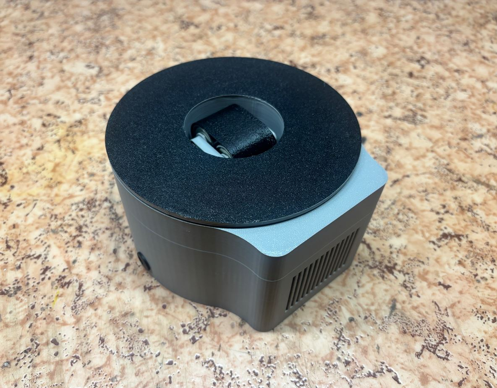
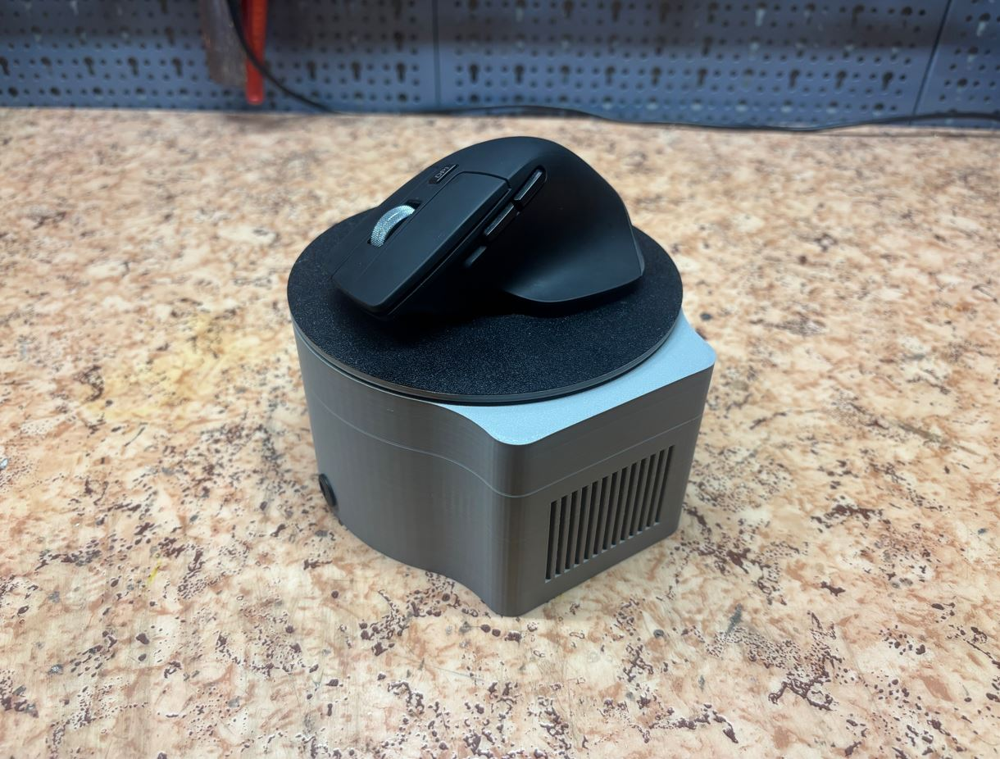
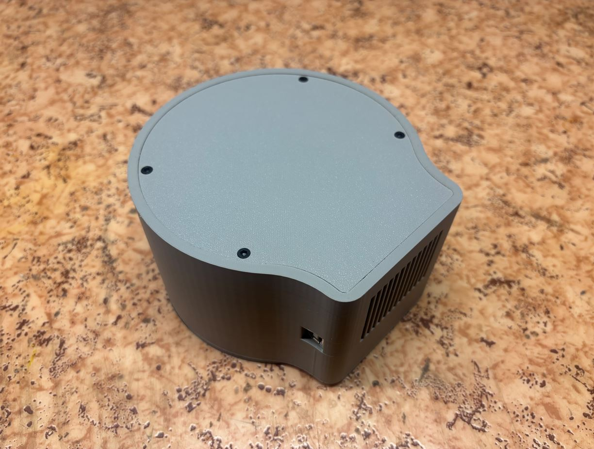
Programování Programming
Řízení stroje zajišťuje Arduino UNO. Původně jsem chtěl přehrávat reálné záznamy pohybu myši, ale kvůli problémům se šumem (o kterých detailněji píši v Co se nepovedlo) jsem od tohoto přístupu nakonec ustoupil. Místo toho jsem navrhl program, který dráhy generuje uměle přímo za běhu. Machine control is provided by the Arduino UNO. Originally, I wanted to play back real mouse movement recordings, but due to noise problems (which I detail in What went wrong), I eventually abandoned this approach. Instead, I designed a program that artificially generates paths on the fly.
K dosažení přirozeně působícího pohybu je důležité plynulé zrychlování a zpomalování. Kdyby se motory okamžitě roztočily na maximální rychlost, pohyb by byl velmi trhaný a strojový. Navíc by se myš na platformě neudržela a spadla by. Funkce generateRotation() a generateSpline() se proto starají o to, aby měl každý přesun hladký náběh i dojezd. Funkce generateSpline() navíc do lineárního posuvu pásu přimíchává mírné sinusové nebo obloukové natáčení platformy. Díky tomu se kurzor nepohybuje po dokonale rovných úsečkách, ale po přirozenějších křivkách.
To achieve natural-looking movement, smooth acceleration and deceleration are important. If the motors instantly spun up to maximum speed, the movement would be very jerky and robotic. Furthermore, the mouse wouldn't stay on the platform and would fall off. Therefore, the generateRotation() and generateSpline() functions ensure that every transition has a smooth start and stop. Additionally, the generateSpline() function mixes a slight sinusoidal or arched platform rotation into the linear belt advance. Thanks to this, the cursor does not move along perfectly straight lines, but along more natural curves.
void generateSpline(long stepLength, int distPixels, float maxRotAmp, int waveCount, float maxVel, float accel) {
// ...
while (stepsRemaining > 0) {
// Calculate braking distance
float brakingDist = (currentVel * currentVel) / (2.0 * accel);
if (stepsRemaining <= brakingDist && currentVel > 1.0) {
currentVel -= accel;
} else if (currentVel < maxVel) {
currentVel += accel;
}
int beltSteps = round(currentVel);
// ...
// Apply sine wave offset based on movement progress
float progress = 1.0 - ((float)stepsRemaining / (float)totalSteps);
int rotSteps = round(maxRotAmp * distPixels * sin(progress * waveCount * PI));
pushFrame(beltSteps * dirMultiplier, rotSteps);
stepsRemaining -= beltSteps;
}
}
Program si v paměti udržuje přehled o pozici kurzoru v rámci rozlišení 1920×1080. V hlavní smyčce loop() vybere náhodný cílový bod na obrazovce a vypočítá vzdálenost a úhel, pod kterým k němu musí platformu natočit. Vzhledem k limitům zvolené konstrukce probíhá přesun ve dvou fázích: stroj nejprve platformu s myší natočí do správného směru a až poté rozhýbe pás, který kurzor posune k cíli. Pokud by se platforma musela otáčet o více než 90°, program invertuje směr pohybu pásu, díky čemuž se může natočit pouze o doplněk k tomuto úhlu (180° - daný úhel). Rychlosti a zrychlení se u každého pohybu navíc mírně randomizují.
The program keeps track of the cursor position in memory within a resolution of 1920×1080. In the main loop(), it selects a random target point on the screen and calculates the distance and angle at which the platform must turn toward it. Given the limits of the chosen design, the move occurs in two phases: the machine first rotates the platform with the mouse into the correct direction, and only then starts the belt moving, pushing the cursor to the target. If the platform had to rotate more than 90°, the program inverts the belt direction, allowing it to rotate only by the complement to that angle (180° - the given angle). Speeds and accelerations are also slightly randomized for each movement.
void loop() {
// ...
float dx = targetX - currX;
float dy = targetY - currY;
float targetAngle = atan2(dy, dx);
float deltaAngle = targetAngle - currAngle;
// Normalize angle to the range -PI to PI
while (deltaAngle > PI) deltaAngle -= 2.0 * PI;
while (deltaAngle < -PI) deltaAngle += 2.0 * PI;
float distPixels = sqrt(dx * dx + dy * dy);
// Path optimization: allow backward belt movement for angles > 90°
if (deltaAngle > PI / 2.0) {
deltaAngle -= PI;
distPixels = -distPixels;
} else if (deltaAngle < -PI / 2.0) {
deltaAngle += PI;
distPixels = -distPixels;
}
// Randomize dynamic parameters for more natural behavior
float currentBeltVel = randomFloat(MIN_BELT_SPEED, MAX_BELT_SPEED);
float currentLinAccel = randomFloat(MIN_LIN_ACCEL, MAX_LIN_ACCEL);
// ...
}
Protože stroj funguje bez zpětné vazby, neví, kde na monitoru se kurzor fyzicky nachází. Postupem času tak dochází k desynchronizaci mezi souřadnicemi v paměti Arduina a realitou. Tento problém řeší funkce homing(). Ta se spouští v náhodných intervalech a pošle kurzor daleko za okraj obrazovky do jednoho z rohů. Fyzicky kurzor narazí na hranu monitoru a zastaví se, čímž si program své souřadnice zarovná s reálnou pozicí.
Because the machine operates without feedback, it doesn't know where the cursor is physically located on the monitor. Over time, this leads to desynchronization between the coordinates in the Arduino's memory and reality. This problem is solved by the homing() function. It is triggered at random intervals and sends the cursor far beyond the edge of the screen into one of the corners. Physically, the cursor hits the edge of the monitor and stops, allowing the program to align its coordinates with the real position.
void homing() {
int corner = random(0, 4);
float targetX, targetY, newX, newY;
switch(corner) {
case 0: // Example for the top-left corner
targetX = -4000.0; targetY = -4000.0; // Extreme coordinates far off-screen
newX = 0.0; newY = 0.0; // Real corner coordinates after physical crash
break;
// ... other corners ...
}
// Calculate distance
float dx = targetX - currX;
float dy = targetY - currY;
float distPixels = sqrt(dx * dx + dy * dy);
// Physical movement (cursor hits the edge and belt slips)
long beltSteps = round(distPixels * STEPS_PER_PIXEL);
generateSpline(beltSteps, distPixels, 0.0, 0, MAX_BELT_SPEED, MAX_LIN_ACCEL);
insertPause(1000);
// Align virtual coordinates with reality
currX = newX;
currY = newY;
}
Plynulý chod krokových motorů i ve chvílích, kdy Arduino počítá složité goniometrické funkce pro plánování další trasy, jsem zajistil oddělením plánování a samotného pohybu pomocí kruhového bufferu a hardwarového časovače. Časovač běží na frekvenci 20 kHz a spouští přerušení ISR(TIMER1_COMPA_vect). To čte vypočítané instrukce z bufferu při frekvenci 50 Hz a pomocí DDA (Digital Differential Analyzer) algoritmu rovnoměrně rozprostírá potřebný počet kroků mezi ticky časovače. Výsledkem je plynulý chod nezávislý na zatížení hlavní smyčky.
I ensured the smooth operation of the stepper motors even when the Arduino is calculating complex trigonometric functions to plan the next route by separating the planning and the movement itself using a circular buffer and a hardware timer. The timer runs at a frequency of 20 kHz and triggers the ISR(TIMER1_COMPA_vect) interrupt. It reads the calculated instructions from the buffer at a frequency of 50 Hz and uses a DDA (Digital Differential Analyzer) algorithm to evenly spread the required number of steps between timer ticks. The result is smooth operation independent of the main loop load.
// Hardware timer interrupt (runs 20,000 times per second)
ISR(TIMER1_COMPA_vect) {
if (tickCounter >= TICKS_PER_FRAME) {
tickCounter = 0;
// Read precalculated instructions from the circular buffer
if (bufferTail != bufferHead) {
Command currentCmd = buffer[bufferTail];
bufferTail = (bufferTail + 1) % BUFFER_SIZE;
currentBeltSteps = abs(currentCmd.beltSteps);
isMoving = true;
} else {
isMoving = false;
}
}
// DDA algorithm - evenly distribute steps between timer ticks
if (isMoving) {
bool stepBelt = false;
if (currentBeltSteps > 0) {
beltAccumulator += currentBeltSteps;
if (beltAccumulator >= TICKS_PER_FRAME) {
stepBelt = true; // Time to perform a physical motor step
beltAccumulator -= TICKS_PER_FRAME;
}
}
// Perform the step (direct register write for maximum speed)
if (stepBelt) PORTD |= (1 << PORTD4);
if (stepBelt) {
delayMicroseconds(1);
PORTD &= ~(1 << PORTD4);
}
}
tickCounter++;
}Co se nepovedlo What went wrong
Volba konstrukce Choice of construction
Při navrhování stroje jsem si sice uvědomoval, že zvolená konstrukce (jeden motor pro otáčení platformy, druhý pro posuv pásu) nedokáže prudce měnit směr pohybu tak snadno jako běžný 2D plotter, ale nedocenil jsem, jak velký problém to v praxi bude. While designing the machine, I realized that the chosen construction (one motor for platform rotation, another for belt advance) cannot abruptly change the direction of movement as easily as a regular 2D plotter, but I underestimated what a big problem this would be in practice.
Lidé myší nepohybují po dokonalých a hladkých křivkách. Naopak často dělají ostré změny směru. Aby je můj stroj dokázal napodobit, musel by všechny ostré rohy buď uměle zaoblovat (což by působilo strojově a nepřirozeně), nebo se v daném bodě úplně zastavit, natočit platformu do nového směru a teprve poté pokračovat. Nakonec jsem zvolil druhou variantu. People do not move mice along perfect and smooth curves. On the contrary, they frequently make sharp directional changes. For my machine to mimic them, it would either have to artificially round off all sharp corners (which would look robotic and unnatural in the recording), or completely stop at the given point, turn the platform to the new direction, and only then proceed. I eventually opted for the second variant.
Další úskalí této konstrukce je v tom, že různé myši mají různé rozměry a odlišné umístění optického senzoru. Trefit senzor přesně do osy otáčení platformy je proto téměř nemožné. Pokud senzor neleží přesně ve středu, každé pootočení platformy vyvolá nechtěný pohyb kurzoru. Navíc se domnívám, že i při dokonalém vycentrování by senzor během rotace zaznamenával falešný pohyb kvůli vlastním nedokonalostem. Another pitfall of this construction is that different mice have different dimensions and different placement of the optical sensor. Hitting the sensor exactly on the rotation axis of the platform is therefore almost impossible. If the sensor is not exactly in the center, every slight turn of the platform causes unintended cursor movement. Furthermore, I suspect that even with perfect centering, the sensor would register false movement during rotation due to its own imperfections.
Největší problém však nastal, když jsem se snažil zaznamenat reálný pohyb myší a následně ho strojem reprodukovat. However, the biggest problem occurred when I tried to record real mouse movement and then reproduce it with the machine.
Záznam pohybu myši Mouse movement recording
Mým původním plánem bylo zaznamenat reálný pohyb myší a následně ho strojem reprodukovat. Napsal jsem proto v Pythonu skript, který vzorkoval polohu kurzoru s frekvencí 50 Hz. Získaná data se překládala na kroky pro motory a ukládala na SD kartu, ze které je stroj posléze četl. My initial plan was to record real mouse movement and subsequently reproduce it with the machine. Therefore, I wrote a script in Python that sampled the cursor position at a frequency of 50 Hz. The acquired data was translated into motor steps and saved to an SD card, from which the machine later read it.
import time
import pyautogui
SAMPLING_FREQUENCY = 50.0 # Hz
RECORDING_DURATION = 10 # s
OUTPUT_FILE = "RawRecording.csv"
INTERVAL = 1.0 / SAMPLING_FREQUENCY
def main():
# Prevent stopping the script if the mouse hits a screen corner
pyautogui.FAILSAFE = False
pyautogui.PAUSE = 0
# Screen dimensions and center coordinates
screen_width, screen_height = pyautogui.size()
center_x, center_y = screen_width // 2, screen_height // 2
print("Recording starts in 3 seconds...")
time.sleep(3)
# Move the mouse to the center
pyautogui.moveTo(center_x, center_y)
with open(OUTPUT_FILE, "w", encoding="utf-8") as f:
# Write CSV header
f.write("Time_ms,Abs_X_px,Abs_Y_px\n")
print("Recording started")
total_samples = int(SAMPLING_FREQUENCY * RECORDING_DURATION)
start_time = time.perf_counter()
next_time = start_time + INTERVAL
for _ in range(total_samples):
# Capture mouse position
current_x, current_y = pyautogui.position()
# Calculate elapsed time
current_time_ms = int((time.perf_counter() - start_time) * 1000)
# Write data to the CSV file
f.write(f"{current_time_ms},{current_x},{current_y}\n")
# Time remaining until the next sample is due
time_remaining = next_time - time.perf_counter()
# Waiting
if time_remaining > 0.002:
time.sleep(time_remaining - 0.002)
# Busy waiting
while time.perf_counter() < next_time:
pass
next_time += INTERVAL
print("Recording finished")
if __name__ == "__main__":
main()
import csv
import math
import struct
import numpy as np
from scipy.signal import lfilter
# Kinematics config
MOUSE_DPI = 970
STEPS_PER_REV = 3200
PULLEY_DIAMETER = 16.5
ROTATION_RATIO = 3.0
SAMPLING_FREQUENCY = 50.0
INTERVAL = 1.0 / SAMPLING_FREQUENCY
THRESHOLD_DEG = 10.0
V_MAX_DEG = 90.0
ACCEL_DEG = 200.0
DEADBAND = 0.03
INPUT_FILE = "RawRecording.csv"
OUTPUT_SMOOTH = "data.bin"
OUTPUT_RAW = "data_raw.bin"
# Filter config
SMA_WINDOW = 20 # Simple Moving Average
EMA_WINDOW = 10 # Exponential Moving Average
# Precomputed constants
PULLEY_CIRCUMFERENCE = math.pi * PULLEY_DIAMETER
THRESHOLD_RAD = math.radians(THRESHOLD_DEG)
V_MAX_RAD = math.radians(V_MAX_DEG)
ACCEL_RAD = math.radians(ACCEL_DEG)
def normalize_angle(angle_rad):
# Normalize to [-pi, pi]
return (angle_rad + math.pi) % (2 * math.pi) - math.pi
def generate_rotation_profile(delta_rad):
# Trapezoidal velocity profile generation
total_rad = abs(delta_rad)
if total_rad == 0:
return []
direction = math.copysign(1, delta_rad)
t_accel = V_MAX_RAD / ACCEL_RAD
d_accel = 0.5 * ACCEL_RAD * (t_accel ** 2)
if 2 * d_accel > total_rad:
# Short move (triangular profile)
d_accel = total_rad / 2
v_max_used = math.sqrt(2 * ACCEL_RAD * d_accel)
t_accel = v_max_used / ACCEL_RAD
t_flat = 0.0
else:
# Long move (trapezoidal profile)
v_max_used = V_MAX_RAD
t_flat = (total_rad - 2 * d_accel) / v_max_used
total_time = 2 * t_accel + t_flat
frame_count = math.ceil(total_time / INTERVAL)
frames_rad = []
last_pos = 0.0
for i in range(1, frame_count + 1):
t = min(i * INTERVAL, total_time)
if t <= t_accel:
pos = 0.5 * ACCEL_RAD * (t ** 2)
elif t <= t_accel + t_flat:
pos = d_accel + v_max_used * (t - t_accel)
else:
t_dec = t - t_accel - t_flat
pos = (total_rad - d_accel) + (v_max_used * t_dec - 0.5 * ACCEL_RAD * (t_dec ** 2))
frames_rad.append((pos - last_pos) * direction)
last_pos = pos
return frames_rad
def load_and_filter_data(filepath):
# Load absolute positions, generate raw deltas, smooth them
raw_abs_x = []
raw_abs_y = []
with open(filepath, "r", encoding="utf-8") as f:
for row in csv.DictReader(f):
raw_abs_x.append(float(row['Abs_X_px']))
raw_abs_y.append(float(row['Abs_Y_px']))
if not raw_abs_x:
return [], [], [], []
abs_x = np.array(raw_abs_x)
abs_y = np.array(raw_abs_y)
raw_dx = np.insert(np.diff(abs_x), 0, 0.0)
raw_dy = np.insert(np.diff(abs_y), 0, 0.0)
# SMA
window_sma = min(SMA_WINDOW, len(raw_dx))
if window_sma > 1:
kernel = np.ones(window_sma) / window_sma
filt_dx = np.convolve(raw_dx, kernel, mode='same')
filt_dy = np.convolve(raw_dy, kernel, mode='same')
else:
filt_dx = np.copy(raw_dx)
filt_dy = np.copy(raw_dy)
# EMA
window_ema = min(EMA_WINDOW, len(raw_dx))
if window_ema > 1:
alpha = 2.0 / (window_ema + 1.0)
# y[n] = alpha*x[n] + (1 - alpha)*y[n - 1]
b = [alpha]
a = [1.0, -(1.0 - alpha)]
filt_dx = lfilter(b, a, filt_dx)
filt_dy = lfilter(b, a, filt_dy)
return raw_dx, raw_dy, filt_dx, filt_dy
def process_raw_kinematics(dx_array, dy_array, output_file):
# No physical limits or belt reversals
belt_acc = 0.0
rot_acc = 0.0
output_frames = []
current_theta = 0.0
for dx, dy in zip(dx_array, dy_array):
d_mm = math.hypot(dx, dy) * (25.4 / MOUSE_DPI)
if d_mm == 0:
output_frames.append((0, 0))
continue
target_theta = math.atan2(dx, -dy)
delta = normalize_angle(target_theta - current_theta)
current_theta += delta
belt_acc += (d_mm / PULLEY_CIRCUMFERENCE) * STEPS_PER_REV
rot_acc += (delta / (2 * math.pi)) * ROTATION_RATIO * STEPS_PER_REV
steps_belt_int = int(round(belt_acc))
steps_rot_int = int(round(rot_acc))
belt_acc -= steps_belt_int
rot_acc -= steps_rot_int
output_frames.append((steps_belt_int, steps_rot_int))
with open(output_file, "wb") as f_out:
for b_steps, r_steps in output_frames:
f_out.write(struct.pack('<hh', b_steps, r_steps))
return len(output_frames)
def process_smoothed_kinematics(dx_array, dy_array, output_file):
# Applies kinematic limits (belt reversals, acceleration profiles)
belt_acc = 0.0
rot_acc = 0.0
output_frames = []
def add_frame(belt_mm, rot_rad):
nonlocal belt_acc, rot_acc
belt_acc += (belt_mm / PULLEY_CIRCUMFERENCE) * STEPS_PER_REV
rot_acc += (rot_rad / (2 * math.pi)) * ROTATION_RATIO * STEPS_PER_REV
steps_belt_int = int(round(belt_acc))
steps_rot_int = int(round(rot_acc))
belt_acc -= steps_belt_int
rot_acc -= steps_rot_int
output_frames.append((steps_belt_int, steps_rot_int))
sharp_stops = 0
current_theta = 0.0
belt_reversed = False
for dx, dy in zip(dx_array, dy_array):
d_mm = math.hypot(dx, dy) * (25.4 / MOUSE_DPI)
if d_mm < DEADBAND:
add_frame(0.0, 0.0)
continue
target_theta = math.atan2(dx, -dy)
effective_heading = current_theta + (math.pi if belt_reversed else 0)
delta = normalize_angle(target_theta - effective_heading)
# Reverse belt direction for sharp turns
if abs(delta) > math.radians(135.0):
belt_reversed = not belt_reversed
effective_heading = current_theta + (math.pi if belt_reversed else 0)
delta = normalize_angle(target_theta - effective_heading)
belt_dir = -1.0 if belt_reversed else 1.0
if abs(delta) > THRESHOLD_RAD:
sharp_stops += 1
for rad_step in generate_rotation_profile(delta):
add_frame(0.0, rad_step)
current_theta += delta
add_frame(d_mm * belt_dir, 0.0)
else:
current_theta += delta
add_frame(d_mm * belt_dir, delta)
with open(output_file, "wb") as f_out:
for b_steps, r_steps in output_frames:
f_out.write(struct.pack('<hh', b_steps, r_steps))
return len(output_frames), sharp_stops
def main():
print("Loading CSV data and applying filters...")
raw_dx, raw_dy, filt_dx, filt_dy = load_and_filter_data(INPUT_FILE)
if len(raw_dx) == 0:
print("No data found.")
return
print("Translating RAW data (1:1)...")
frames_raw = process_raw_kinematics(raw_dx, raw_dy, OUTPUT_RAW)
print("Translating SMOOTHED data and applying kinematics...")
frames_filt, stops_filt = process_smoothed_kinematics(filt_dx, filt_dy, OUTPUT_SMOOTH)
print("-" * 40)
print("Done!")
print(f"Saved to: {OUTPUT_RAW} and {OUTPUT_SMOOTH}")
print(f"Original mouse recording: {len(raw_dx) * INTERVAL:.2f} s ({len(raw_dx)} samples)")
print(f"Raw data timeline: {frames_raw * INTERVAL:.2f} s ({frames_raw} frames)")
print(f"Smoothed timeline: {frames_filt * INTERVAL:.2f} s ({frames_filt} frames), sharp stops: {stops_filt}")
if __name__ == "__main__":
main()
import struct
import math
import matplotlib.pyplot as plt
STEPS_PER_REV = 3200
PULLEY_DIAMETER = 16.5
ROTATION_RATIO = 3.0
FREQUENCY = 50.0
INTERVAL = 1.0 / FREQUENCY
PULLEY_CIRCUMFERENCE = math.pi * PULLEY_DIAMETER
INPUT_SMOOTH = "data.bin"
INPUT_RAW = "data_raw.bin"
def load_and_calculate_kinematics(filepath):
# Load .bin file and reconstruct trajectory from step data
time_data = []
x_coords = [0.0]
y_coords = [0.0]
angles_deg = []
cum_distance = []
curr_x = 0.0
curr_y = 0.0
curr_angle_rad = 0.0
curr_distance = 0.0
curr_time = 0.0
try:
with open(filepath, "rb") as f:
data = f.read()
except FileNotFoundError:
print(f"Warning: File '{filepath}' not found.")
return None
frame_size = struct.calcsize('<hh')
frame_count = len(data) // frame_size
print(f"Loading {frame_count} frames from {filepath}...")
for i in range(frame_count):
frame = data[i*frame_size : (i+1)*frame_size]
b_steps, r_steps = struct.unpack('<hh', frame)
belt_mm = (b_steps / STEPS_PER_REV) * PULLEY_CIRCUMFERENCE
rotation_rad = (r_steps / (ROTATION_RATIO * STEPS_PER_REV)) * 2 * math.pi
curr_angle_rad += rotation_rad
curr_x += belt_mm * math.sin(curr_angle_rad)
curr_y += belt_mm * math.cos(curr_angle_rad)
curr_distance += abs(belt_mm)
curr_time += INTERVAL
time_data.append(curr_time)
x_coords.append(curr_x)
y_coords.append(curr_y)
angles_deg.append(math.degrees(curr_angle_rad))
cum_distance.append(curr_distance)
return time_data, x_coords, y_coords, angles_deg, cum_distance
def main():
data_smooth = load_and_calculate_kinematics(INPUT_SMOOTH)
data_raw = load_and_calculate_kinematics(INPUT_RAW)
if not data_smooth and not data_raw:
print("Error: No data to visualize. Run the generator first.")
return
# Plotting
fig = plt.figure(figsize=(12, 8))
fig.canvas.manager.set_window_title('Mouse Trajectory Analysis (Raw vs Smoothed)')
ax1 = plt.subplot(2, 1, 1)
# Plot raw data below smoothed data
if data_raw:
time_r, x_r, y_r, angle_r, dist_r = data_raw
ax1.plot(x_r, y_r, label='Raw Trajectory', color='lightgray', linewidth=1.5, linestyle='--')
ax1.plot(x_r[-1], y_r[-1], 'x', color='gray', label='Target (Raw)', markersize=8)
# Plot smoothed data on top
if data_smooth:
time_s, x_s, y_s, angle_s, dist_s = data_smooth
ax1.plot(x_s, y_s, label='Smoothed Trajectory', color='blue', linewidth=1.5)
ax1.plot(x_s[0], y_s[0], 'go', label='Start', markersize=8)
ax1.plot(x_s[-1], y_s[-1], 'ro', label='Target (Smoothed)', markersize=8)
ax1.set_aspect('equal', adjustable='datalim')
ax1.set_title("2D Mouse Trajectory on Desk")
ax1.set_xlabel("X Axis (mm)")
ax1.set_ylabel("Y Axis (mm)")
ax1.grid(True, linestyle='--', alpha=0.7)
ax1.legend()
ax2 = plt.subplot(2, 2, 3)
if data_raw:
ax2.plot(time_r, angle_r, color='moccasin', label='Raw Data', linestyle='--')
if data_smooth:
ax2.plot(time_s, angle_s, color='orange', label='Smoothed Data')
ax2.set_title("Machine Orientation Over Time")
ax2.set_xlabel("Time (s)")
ax2.set_ylabel("Angle (°)")
ax2.grid(True, linestyle='--', alpha=0.7)
ax2.legend()
ax3 = plt.subplot(2, 2, 4)
if data_raw:
ax3.plot(time_r, dist_r, color='lightgreen', label='Raw Data', linestyle='--')
if data_smooth:
ax3.plot(time_s, dist_s, color='green', label='Smoothed Data')
ax3.set_title("Distance Over Time")
ax3.set_xlabel("Time (s)")
ax3.set_ylabel("Distance (mm)")
ax3.grid(True, linestyle='--', alpha=0.7)
ax3.legend()
plt.tight_layout()
plt.show()
if __name__ == "__main__":
main()
Ukázalo se ale, že přirozený šum v datech, chvění ruky a mírně trhaný pohyb myši po stole způsobují po přepočtu na kinematiku stroje obrovské a nesmyslné skoky v úhlu natočení platformy mezi jednotlivými vzorky. It turned out, however, that natural noise in the data, hand jitter, and the slightly jerky movement of the mouse on the table caused huge and nonsensical jumps in the platform rotation angle between individual samples after conversion to the machine's kinematics.
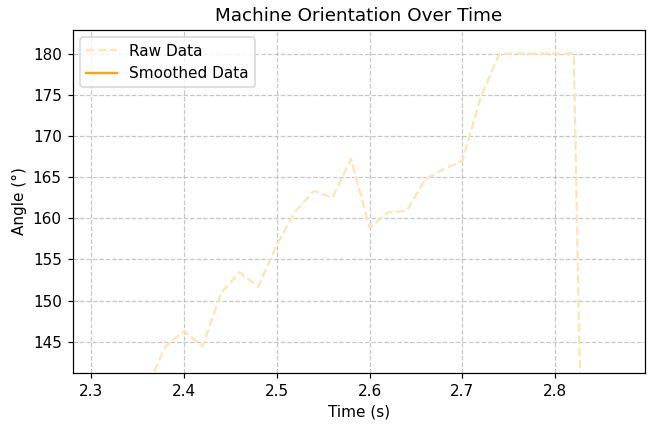
Vyzkoušel jsem několik metod filtrace signálu, nikdy jsem však nedospěl k uspokojivému výsledku. Některé algoritmy (SMA, EMA) vyhladily pohyb natolik, že působil strojově a nepřirozeně. Proložení spline křivkami zase nezachovalo původní rychlosti a filtrace Savitzky-Golay vnášela do pohybu podkmity. Nakonec jsem od snahy přehrávat reálný záznam upustil a rozhodl jsem se generovat dráhu pohybu uměle. I tried several signal filtering methods, but never arrived at a satisfactory result. Some algorithms (SMA, EMA) smoothed the movement so much that it looked robotic and unnatural. Fitting with spline curves failed to preserve the original speeds, and Savitzky-Golay filtering introduced undershoots into the movement. Ultimately, I abandoned the attempt to play back the real recording and decided to generate the movement path artificially.
Příklad filtrace pomocí SMA a EMA: Example of filtering using SMA and EMA:
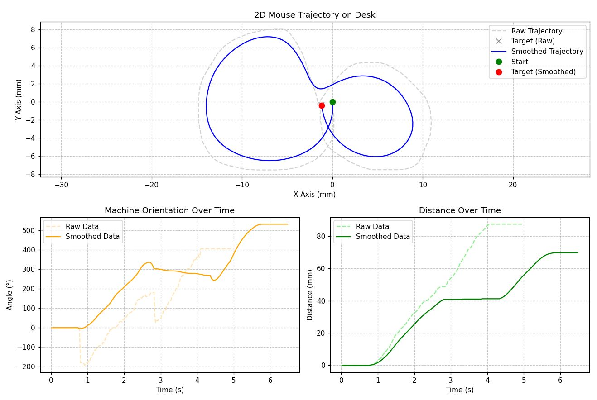
Spálené Arduino Burnt Arduino
Během fáze, kdy jsem ještě testoval čtení instrukcí z SD karty, jsem narazil na problém, kdy se stroj po chvíli běhu vždy zasekl. K úplnému selhání ale nedošlo okamžitě. Nejprve začal vynechávat instrukce zhruba v sekundových blocích, tyto výpadky se postupně prodlužovaly, až se motory zastavily úplně. Zvláštní bylo, že pokud jsem Arduino s CNC shieldem napájel z počítače přes USB a motory ze sítě (se společnou zemí), vše fungovalo bezchybně. During the phase when I was still testing reading instructions from the SD card, I encountered a problem where the machine always froze after running for a while. However, total failure did not happen immediately. First, it started dropping instructions in roughly one-second blocks, these dropouts gradually lengthened until the motors stopped completely. The strange thing was that if I powered the Arduino with the CNC shield from a computer via USB and the motors from the mains (with a common ground), everything worked flawlessly.
Zpočátku jsem podezříval elektromagnetické rušení od krokových motorů, které by mohlo narušovat komunikaci s SD modulem. Abych to vyřešil, přidal jsem na výstup měniče napětí i na vstup SD karty kondenzátory (100 nF keramický a 680 µF elektrolytický). Také jsem pro jistotu zkroutil fázové vodiče motorů i napájecí vodiče SD karty. Problém však přetrvával. Initially, I suspected electromagnetic interference from the stepper motors, which could disrupt communication with the SD module. To solve this, I added capacitors (100 nF ceramic and 680 µF electrolytic) to the voltage converter output and the SD card input. Just to be sure, I also twisted the motor phase wires and the SD card power wires. However, the problem persisted.
Na skutečnou příčinu jsem přišel, až když jsem rozebraný stroj testoval a spálil si prst o hlavní čip ATmega328P na Arduinu. Problém tedy nezpůsobovalo rušení, ale poškozené Arduino, které se přehřívalo a z důvodu tepelné ochrany se vypínalo. Po výměně Arduina za nový kus už tento problém nikdy nenastal. I discovered the real cause only when I was testing the disassembled machine and burned my finger on the main ATmega328P chip on the Arduino. Therefore, the problem was not caused by interference, but by a damaged Arduino that was overheating and shutting down due to thermal protection. After replacing the Arduino with a new unit, this problem never occurred again.
Showcase Showcase
Zdrojový kód Source code
Zdrojový kód najdete také na GitHubu. The source code is also available on GitHub.
#include <Arduino.h>
#include <math.h>
// Change motor orientation
const bool INVERT_ROTATION_DIR = false;
const bool INVERT_BELT_DIR = false;
// Speed and acceleration limits
const float MIN_BELT_SPEED = 90.0;
const float MAX_BELT_SPEED = 110.0;
const float MIN_ROT_SPEED = 40.0;
const float MAX_ROT_SPEED = 60.0;
const float MIN_LIN_ACCEL = 1.5;
const float MAX_LIN_ACCEL = 2.5;
const float MIN_ROT_ACCEL = 0.8;
const float MAX_ROT_ACCEL = 1.2;
// Pause durations (ms)
const long MIN_PAUSE_AFTER_ROT_MS = 100;
const long MAX_PAUSE_AFTER_ROT_MS = 200;
const long MIN_PAUSE_AFTER_MOVE_MS = 100;
const long MAX_PAUSE_AFTER_MOVE_MS = 20000;
// Spline movement and workspace boundaries
const float MIN_WAVE_AMP = -0.03;
const float MAX_WAVE_AMP = 0.03;
const int MIN_WAVE_COUNT = 1;
const int MAX_WAVE_COUNT = 2;
const float MIN_X = 0.0;
const float MAX_X = 1920.0;
const float MIN_Y = 0.0;
const float MAX_Y = 1080.0;
// Hardware and kinematics properties
const float STEPS_PER_REV = 1600.0;
const float ROTATION_GEAR_RATIO = 3.0;
const float PULLEY_TEETH = 26.0;
const float TOOTH_PITCH = 2.0;
const float MOUSE_DPI = 1300.0;
// Calibration intervals
const int MIN_MOVES_BEFORE_CALIB = 5;
const int MAX_MOVES_BEFORE_CALIB = 15;
// Pin definitions for CNC Shield V3
#define MOTOR_ROT_STEP 2
#define MOTOR_ROT_DIR 5
#define MOTOR_BELT_STEP 4
#define MOTOR_BELT_DIR 7
#define EN_PIN 8
// Timer interrupt settings
#define TIMER_FREQUENCY 20000
#define TICKS_PER_FRAME 400
struct Command {
int16_t beltSteps;
int16_t rotSteps;
};
// Command buffer configuration
#define BUFFER_SIZE 100
Command buffer[BUFFER_SIZE];
volatile uint8_t bufferHead = 0;
volatile uint8_t bufferTail = 0;
// Stepper state variables
volatile int tickCounter = TICKS_PER_FRAME;
volatile int currentBeltSteps = 0;
volatile int currentRotSteps = 0;
volatile long beltAccumulator = 0;
volatile long rotAccumulator = 0;
volatile bool isMoving = false;
// Precalculated kinematics coefficients
const float RAD_PER_ROT_STEP = (2.0 * PI) / (STEPS_PER_REV * ROTATION_GEAR_RATIO);
const float MM_PER_INCH = 25.4;
const float MM_PER_PIXEL = MM_PER_INCH / MOUSE_DPI;
const float MM_PER_BELT_STEP = (PULLEY_TEETH * TOOTH_PITCH) / STEPS_PER_REV;
const float STEPS_PER_PIXEL = MM_PER_PIXEL / MM_PER_BELT_STEP;
const float MS_PER_FRAME = (1000.0 * TICKS_PER_FRAME) / TIMER_FREQUENCY;
// Current machine state
float currX = 0.0;
float currY = 0.0;
float currAngle = -PI / 2.0;
int movesUntilCalib = 0;
void setup() {
randomSeed(analogRead(A0));
pinMode(MOTOR_BELT_STEP, OUTPUT);
pinMode(MOTOR_BELT_DIR, OUTPUT);
pinMode(MOTOR_ROT_STEP, OUTPUT);
pinMode(MOTOR_ROT_DIR, OUTPUT);
pinMode(EN_PIN, OUTPUT);
digitalWrite(EN_PIN, LOW);
// Setup Timer1 for interrupts
noInterrupts();
TCCR1A = 0;
TCCR1B = 0;
TCNT1 = 0;
OCR1A = 799;
TCCR1B |= (1 << WGM12) | (1 << CS10);
TIMSK1 |= (1 << OCIE1A);
interrupts();
delay(1000);
}
// Push a new motion frame into the ring buffer
void pushFrame(int16_t belt, int16_t rot) {
uint8_t nextHead = (bufferHead + 1) % BUFFER_SIZE;
while (nextHead == bufferTail) {
delayMicroseconds(100);
}
buffer[bufferHead].beltSteps = belt;
buffer[bufferHead].rotSteps = rot;
bufferHead = nextHead;
// Update coordinates based on movement
currAngle += rot * RAD_PER_ROT_STEP;
float pixelDisplacement = (float)belt / STEPS_PER_PIXEL;
currX += pixelDisplacement * cos(currAngle);
currY += pixelDisplacement * sin(currAngle);
while (currAngle > PI) currAngle -= 2.0 * PI;
while (currAngle < -PI) currAngle += 2.0 * PI;
}
// Generate empty frames to create a pause
void insertPause(long ms) {
int frames = round(ms / MS_PER_FRAME);
for(int i = 0; i < frames; i++) {
pushFrame(0, 0);
}
}
float randomFloat(float minVal, float maxVal) {
return minVal + (float)random(0, 1000) / 1000.0 * (maxVal - minVal);
}
// Generate a rotational profile with acceleration/deceleration
void generateRotation(long stepAngle, float maxVel, float accel) {
long stepsRemaining = abs(stepAngle);
if (stepsRemaining == 0) return;
int dirMultiplier = (stepAngle > 0) ? 1 : -1;
float currentVel = 0;
while (stepsRemaining > 0) {
float brakingDist = (currentVel * currentVel) / (2.0 * accel);
if (stepsRemaining <= brakingDist && currentVel > 1.0) {
currentVel -= accel;
} else if (currentVel < maxVel) {
currentVel += accel;
}
int steps = round(currentVel);
if (steps < 1) steps = 1;
if (steps > stepsRemaining) steps = stepsRemaining;
pushFrame(0, steps * dirMultiplier);
stepsRemaining -= steps;
}
}
// Generate a linear movement combined with a sine wave rotation
void generateSpline(long stepLength, int distPixels, float maxRotAmp, int waveCount, float maxVel, float accel) {
long stepsRemaining = abs(stepLength);
if (stepsRemaining == 0) return;
int dirMultiplier = (stepLength > 0) ? 1 : -1;
float currentVel = 0;
long totalSteps = stepsRemaining;
while (stepsRemaining > 0) {
float brakingDist = (currentVel * currentVel) / (2.0 * accel);
if (stepsRemaining <= brakingDist && currentVel > 1.0) {
currentVel -= accel;
} else if (currentVel < maxVel) {
currentVel += accel;
}
int beltSteps = round(currentVel);
if (beltSteps < 1) beltSteps = 1;
if (beltSteps > stepsRemaining) beltSteps = stepsRemaining;
// Apply sine wave offset based on movement progress
float progress = 1.0 - ((float)stepsRemaining / (float)totalSteps);
int rotSteps = round(maxRotAmp * distPixels * sin(progress * waveCount * PI));
pushFrame(beltSteps * dirMultiplier, rotSteps);
stepsRemaining -= beltSteps;
}
}
// Move to a random corner to reset physical position
void homing() {
int corner = random(0, 4);
float targetX, targetY, newX, newY;
switch(corner) {
case 0:
targetX = -4000.0; targetY = -4000.0;
newX = 0.0; newY = 0.0;
break;
case 1:
targetX = MAX_X + 4000.0; targetY = -4000.0;
newX = MAX_X; newY = 0.0;
break;
case 2:
targetX = -4000.0; targetY = MAX_Y + 4000.0;
newX = 0.0; newY = MAX_Y;
break;
case 3:
targetX = MAX_X + 4000.0; targetY = MAX_Y + 4000.0;
newX = MAX_X; newY = MAX_Y;
break;
}
// Calculate trajectory and angles
float dx = targetX - currX;
float dy = targetY - currY;
float targetAngle = atan2(dy, dx);
float deltaAngle = targetAngle - currAngle;
while (deltaAngle > PI) deltaAngle -= 2.0 * PI;
while (deltaAngle < -PI) deltaAngle += 2.0 * PI;
// Rotation towards corner
long rotSteps = round(deltaAngle / RAD_PER_ROT_STEP);
generateRotation(rotSteps, MAX_ROT_SPEED, MAX_ROT_ACCEL);
insertPause(200);
// Move into the corner
float distPixels = sqrt(dx * dx + dy * dy);
long beltSteps = round(distPixels * STEPS_PER_PIXEL);
generateSpline(beltSteps, distPixels, 0.0, 0, MAX_BELT_SPEED, MAX_LIN_ACCEL);
insertPause(1000);
// Reset coordinates to match the physical corner
currX = newX;
currY = newY;
}
void loop() {
// Periodic homing
if (movesUntilCalib <= 0) {
homing();
movesUntilCalib = random(MIN_MOVES_BEFORE_CALIB, MAX_MOVES_BEFORE_CALIB + 1);
}
// Generate random target
float targetX = random(MIN_X, MAX_X);
float targetY = random(MIN_Y, MAX_Y);
float dx = targetX - currX;
float dy = targetY - currY;
float targetAngle = atan2(dy, dx);
float deltaAngle = targetAngle - currAngle;
while (deltaAngle > PI) deltaAngle -= 2.0 * PI;
while (deltaAngle < -PI) deltaAngle += 2.0 * PI;
float distPixels = sqrt(dx * dx + dy * dy);
// Optimize path by allowing backward movement
if (deltaAngle > PI / 2.0) {
deltaAngle -= PI;
distPixels = -distPixels;
} else if (deltaAngle < -PI / 2.0) {
deltaAngle += PI;
distPixels = -distPixels;
}
// Randomize dynamic parameters
float currentRotVel = randomFloat(MIN_ROT_SPEED, MAX_ROT_SPEED);
float currentRotAccel = randomFloat(MIN_ROT_ACCEL, MAX_ROT_ACCEL);
float currentBeltVel = randomFloat(MIN_BELT_SPEED, MAX_BELT_SPEED);
float currentLinAccel = randomFloat(MIN_LIN_ACCEL, MAX_LIN_ACCEL);
// Execute rotation
long rotSteps = round(deltaAngle / RAD_PER_ROT_STEP);
generateRotation(rotSteps, currentRotVel, currentRotAccel);
insertPause(random(MIN_PAUSE_AFTER_ROT_MS, MAX_PAUSE_AFTER_ROT_MS + 1));
// Execute linear movement
long beltSteps = round(distPixels * STEPS_PER_PIXEL);
float waveAmp = randomFloat(MIN_WAVE_AMP, MAX_WAVE_AMP);
int countAmp = random(MIN_WAVE_COUNT, MAX_WAVE_COUNT + 1);
generateSpline(beltSteps, distPixels, waveAmp, countAmp, currentBeltVel, currentLinAccel);
insertPause(random(MIN_PAUSE_AFTER_MOVE_MS, MAX_PAUSE_AFTER_MOVE_MS));
movesUntilCalib--;
}
// Timer1 interrupt
ISR(TIMER1_COMPA_vect) {
if (tickCounter >= TICKS_PER_FRAME) {
tickCounter = 0;
// Fetch next command from buffer if available
if (bufferTail != bufferHead) {
Command currentCmd = buffer[bufferTail];
bufferTail = (bufferTail + 1) % BUFFER_SIZE;
// Setup belt direction
bool beltDir = (currentCmd.beltSteps >= 0);
if (INVERT_BELT_DIR) beltDir = !beltDir;
if (beltDir) PORTD |= (1 << PORTD7);
else PORTD &= ~(1 << PORTD7);
currentBeltSteps = abs(currentCmd.beltSteps);
// Setup rotation direction
bool rotDir = (currentCmd.rotSteps >= 0);
if (INVERT_ROTATION_DIR) rotDir = !rotDir;
if (rotDir) PORTD |= (1 << PORTD5);
else PORTD &= ~(1 << PORTD5);
currentRotSteps = abs(currentCmd.rotSteps);
if (currentBeltSteps > TICKS_PER_FRAME) currentBeltSteps = TICKS_PER_FRAME;
if (currentRotSteps > TICKS_PER_FRAME) currentRotSteps = TICKS_PER_FRAME;
isMoving = true;
} else {
isMoving = false;
currentBeltSteps = 0;
currentRotSteps = 0;
}
}
// Generate step pulses using DDA
if (isMoving) {
bool stepBelt = false;
bool stepRot = false;
if (currentBeltSteps > 0) {
beltAccumulator += currentBeltSteps;
if (beltAccumulator >= TICKS_PER_FRAME) {
stepBelt = true;
beltAccumulator -= TICKS_PER_FRAME;
}
}
if (currentRotSteps > 0) {
rotAccumulator += currentRotSteps;
if (rotAccumulator >= TICKS_PER_FRAME) {
stepRot = true;
rotAccumulator -= TICKS_PER_FRAME;
}
}
// Trigger physical steps
if (stepBelt) PORTD |= (1 << PORTD4);
if (stepRot) PORTD |= (1 << PORTD2);
if (stepBelt || stepRot) {
delayMicroseconds(1);
if (stepBelt) PORTD &= ~(1 << PORTD4);
if (stepRot) PORTD &= ~(1 << PORTD2);
}
}
tickCounter++;
}